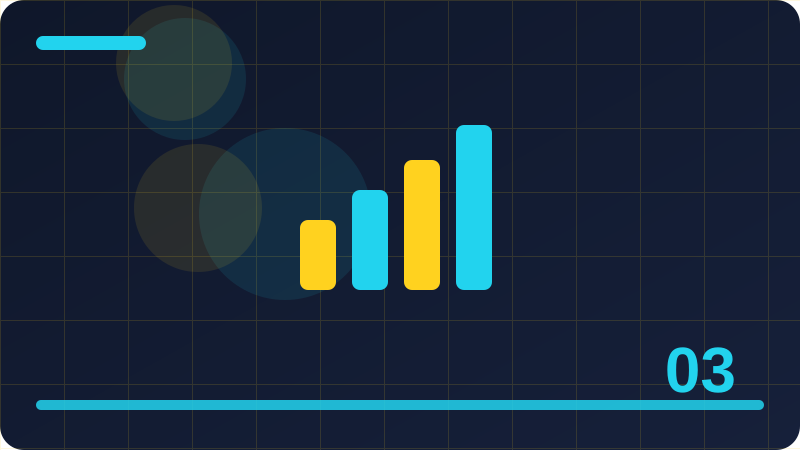

Chapter 3: Numbers and Arithmetic

Section 1: Integers in Go
Learning integers in go well matters more than memorising a single example. The goal of this section is a clear mental picture: what the idea means, how Go expresses it, and where it fits in a small program.
Go expresses integers in go with a small amount of syntax, and that smallness is deliberate. When a language needs only a few forms for an idea, you can spend your attention on the problem instead of on punctuation.
The example is deliberately short. Short examples are easier to change, and changing one thing at a time is the fastest way to learn: change a value, run the program, and watch exactly what changes in the output.
Another common mistake is copying a longer example before the short one works. Build the small version first, confirm it runs, and only then add the next piece, so you always know which change introduced a problem.
When you finish this section, explain integers in go aloud in one or two sentences, as if to a friend who has never seen Go. If you cannot explain it simply, re-read the section and the example once more before moving on.
To see why integers in go matters, imagine a small program that needs to do one clear job for a user. Without a clear grasp of integers in go, that program becomes harder to write, harder to read, and harder to fix when it behaves unexpectedly. With it, the same program can be written in a few plain lines, each of which you can explain. That difference is the difference between guessing at code and writing code with intent, and it grows with every program you build.
Another way to think about integers in go is to ask three questions: what does it represent, what can it do, and what can go wrong with it. Answering those questions for the example below will give you a working model, even if some details are still new. You do not need to know every corner of integers in go yet; you need a reliable starting model that later sections can refine, and that is exactly what this section aims to give you.
In practice, integers in go shows up in programs of every size, from a first hello-world style example to tools people use every day. The forms change a little as programs grow, but the core idea stays recognisable, which is why learning it carefully now pays off repeatedly. Watch for it in later chapters, and notice how the same idea combines with new ones to solve larger problems.
When you practise integers in go, aim for understanding you can demonstrate, not just recognition. Run the example, break it in a small way, fix it again, and then write a version of your own with different values. That cycle of running, breaking, fixing and rebuilding is short, repeatable, and far more effective than reading the same page several times without touching the keyboard.
package main
import "fmt"
func main() {
result := 6 * 2
fmt.Println(result)
}Check: What would change in the example if you changed one value, and why would that change happen?
Section 2: Signed and Unsigned Integers
Start this section by thinking about signed and unsigned integers as a tool, not as a rule to recite. Tools are judged by what they let you build, and this section shows the job this tool does inside a Go program.
The way Go handles signed and unsigned integers rewards reading code slowly. Each line has one job, and if you can say that job in plain words, you probably understand the line well enough to change it safely.
Try predicting the output before you run the example. If your prediction is wrong, that is useful information, not a failure, because the gap between prediction and output points directly at the idea you still need to clarify.
Beginners also sometimes assume a program that runs is a program that is correct. Running proves the code compiles and executes; checking the output against what you expected proves it does the job you intended.
Keep a note of any question signed and unsigned integers leaves you with. Good questions are part of learning, and many of them will be answered naturally by the next few sections, which build directly on this one.
To see why signed and unsigned integers matters, imagine a small program that needs to do one clear job for a user. Without a clear grasp of signed and unsigned integers, that program becomes harder to write, harder to read, and harder to fix when it behaves unexpectedly. With it, the same program can be written in a few plain lines, each of which you can explain. That difference is the difference between guessing at code and writing code with intent, and it grows with every program you build.
Another way to think about signed and unsigned integers is to ask three questions: what does it represent, what can it do, and what can go wrong with it. Answering those questions for the example below will give you a working model, even if some details are still new. You do not need to know every corner of signed and unsigned integers yet; you need a reliable starting model that later sections can refine, and that is exactly what this section aims to give you.
In practice, signed and unsigned integers shows up in programs of every size, from a first hello-world style example to tools people use every day. The forms change a little as programs grow, but the core idea stays recognisable, which is why learning it carefully now pays off repeatedly. Watch for it in later chapters, and notice how the same idea combines with new ones to solve larger problems.
When you practise signed and unsigned integers, aim for understanding you can demonstrate, not just recognition. Run the example, break it in a small way, fix it again, and then write a version of your own with different values. That cycle of running, breaking, fixing and rebuilding is short, repeatable, and far more effective than reading the same page several times without touching the keyboard.
package main
import "fmt"
func main() {
result := 4 + 5
fmt.Println(result)
}Check: What mistake is most likely when using signed and unsigned integers, and how would you spot it from the output or error message?
Section 3: Choosing an Integer Size
This section introduces choosing an integer size. It is a useful place to slow down, because the idea here appears again and again in later chapters, and a learner who understands it now will find the next steps much easier.
In Go, choosing an integer size follows the same honest design as the rest of the language: the code says what it means, the compiler checks what it can, and surprises are kept small. That honesty is one reason beginners can trust what they read.
Look at the code example below and read it line by line before you run it. Notice which part names something, which part does something, and which part shows a result, because that three-part reading habit works for almost every Go example.
A common mistake with choosing an integer size is rushing past an error message. Go error messages are usually specific, and they often name the line and the problem, so reading the first error carefully saves more time than guessing at a fix.
To practise choosing an integer size, write the example from memory, then change one value and one name. That small act of rebuilding forces you to recall the structure instead of recognising it, and recall is what lasts.
To see why choosing an integer size matters, imagine a small program that needs to do one clear job for a user. Without a clear grasp of choosing an integer size, that program becomes harder to write, harder to read, and harder to fix when it behaves unexpectedly. With it, the same program can be written in a few plain lines, each of which you can explain. That difference is the difference between guessing at code and writing code with intent, and it grows with every program you build.
Another way to think about choosing an integer size is to ask three questions: what does it represent, what can it do, and what can go wrong with it. Answering those questions for the example below will give you a working model, even if some details are still new. You do not need to know every corner of choosing an integer size yet; you need a reliable starting model that later sections can refine, and that is exactly what this section aims to give you.
In practice, choosing an integer size shows up in programs of every size, from a first hello-world style example to tools people use every day. The forms change a little as programs grow, but the core idea stays recognisable, which is why learning it carefully now pays off repeatedly. Watch for it in later chapters, and notice how the same idea combines with new ones to solve larger problems.
When you practise choosing an integer size, aim for understanding you can demonstrate, not just recognition. Run the example, break it in a small way, fix it again, and then write a version of your own with different values. That cycle of running, breaking, fixing and rebuilding is short, repeatable, and far more effective than reading the same page several times without touching the keyboard.
package main
import "fmt"
func main() {
result := 8 * 2
fmt.Println(result)
}Check: Explain choosing an integer size to a beginner in two sentences without using code.
Section 4: Floating-Point Numbers
Learning floating-point numbers well matters more than memorising a single example. The goal of this section is a clear mental picture: what the idea means, how Go expresses it, and where it fits in a small program.
Go expresses floating-point numbers with a small amount of syntax, and that smallness is deliberate. When a language needs only a few forms for an idea, you can spend your attention on the problem instead of on punctuation.
The example is deliberately short. Short examples are easier to change, and changing one thing at a time is the fastest way to learn: change a value, run the program, and watch exactly what changes in the output.
Another common mistake is copying a longer example before the short one works. Build the small version first, confirm it runs, and only then add the next piece, so you always know which change introduced a problem.
When you finish this section, explain floating-point numbers aloud in one or two sentences, as if to a friend who has never seen Go. If you cannot explain it simply, re-read the section and the example once more before moving on.
To see why floating-point numbers matters, imagine a small program that needs to do one clear job for a user. Without a clear grasp of floating-point numbers, that program becomes harder to write, harder to read, and harder to fix when it behaves unexpectedly. With it, the same program can be written in a few plain lines, each of which you can explain. That difference is the difference between guessing at code and writing code with intent, and it grows with every program you build.
Another way to think about floating-point numbers is to ask three questions: what does it represent, what can it do, and what can go wrong with it. Answering those questions for the example below will give you a working model, even if some details are still new. You do not need to know every corner of floating-point numbers yet; you need a reliable starting model that later sections can refine, and that is exactly what this section aims to give you.
In practice, floating-point numbers shows up in programs of every size, from a first hello-world style example to tools people use every day. The forms change a little as programs grow, but the core idea stays recognisable, which is why learning it carefully now pays off repeatedly. Watch for it in later chapters, and notice how the same idea combines with new ones to solve larger problems.
When you practise floating-point numbers, aim for understanding you can demonstrate, not just recognition. Run the example, break it in a small way, fix it again, and then write a version of your own with different values. That cycle of running, breaking, fixing and rebuilding is short, repeatable, and far more effective than reading the same page several times without touching the keyboard.
Go rewards code that is plain and direct, so prefer the straightforward version of an idea over a clever one.
package main
import "fmt"
func main() {
result := 6 + 7
fmt.Println(result)
}Check: Give a small everyday example, outside programming, that works like floating-point numbers.
Section 5: Float32 Versus Float64
Start this section by thinking about float32 versus float64 as a tool, not as a rule to recite. Tools are judged by what they let you build, and this section shows the job this tool does inside a Go program.
The way Go handles float32 versus float64 rewards reading code slowly. Each line has one job, and if you can say that job in plain words, you probably understand the line well enough to change it safely.
Try predicting the output before you run the example. If your prediction is wrong, that is useful information, not a failure, because the gap between prediction and output points directly at the idea you still need to clarify.
Beginners also sometimes assume a program that runs is a program that is correct. Running proves the code compiles and executes; checking the output against what you expected proves it does the job you intended.
Keep a note of any question float32 versus float64 leaves you with. Good questions are part of learning, and many of them will be answered naturally by the next few sections, which build directly on this one.
To see why float32 versus float64 matters, imagine a small program that needs to do one clear job for a user. Without a clear grasp of float32 versus float64, that program becomes harder to write, harder to read, and harder to fix when it behaves unexpectedly. With it, the same program can be written in a few plain lines, each of which you can explain. That difference is the difference between guessing at code and writing code with intent, and it grows with every program you build.
Another way to think about float32 versus float64 is to ask three questions: what does it represent, what can it do, and what can go wrong with it. Answering those questions for the example below will give you a working model, even if some details are still new. You do not need to know every corner of float32 versus float64 yet; you need a reliable starting model that later sections can refine, and that is exactly what this section aims to give you.
In practice, float32 versus float64 shows up in programs of every size, from a first hello-world style example to tools people use every day. The forms change a little as programs grow, but the core idea stays recognisable, which is why learning it carefully now pays off repeatedly. Watch for it in later chapters, and notice how the same idea combines with new ones to solve larger problems.
When you practise float32 versus float64, aim for understanding you can demonstrate, not just recognition. Run the example, break it in a small way, fix it again, and then write a version of your own with different values. That cycle of running, breaking, fixing and rebuilding is short, repeatable, and far more effective than reading the same page several times without touching the keyboard.
Test your understanding with a tiny variation of the example rather than a large new program built from nothing.
package main
import "fmt"
func main() {
result := 10 * 2
fmt.Println(result)
}Check: In your own words, what does float32 versus float64 mean, and where would you use it in a small Go program?
Section 6: Adding Numbers
This section introduces adding numbers. It is a useful place to slow down, because the idea here appears again and again in later chapters, and a learner who understands it now will find the next steps much easier.
In Go, adding numbers follows the same honest design as the rest of the language: the code says what it means, the compiler checks what it can, and surprises are kept small. That honesty is one reason beginners can trust what they read.
Look at the code example below and read it line by line before you run it. Notice which part names something, which part does something, and which part shows a result, because that three-part reading habit works for almost every Go example.
A common mistake with adding numbers is rushing past an error message. Go error messages are usually specific, and they often name the line and the problem, so reading the first error carefully saves more time than guessing at a fix.
To practise adding numbers, write the example from memory, then change one value and one name. That small act of rebuilding forces you to recall the structure instead of recognising it, and recall is what lasts.
To see why adding numbers matters, imagine a small program that needs to do one clear job for a user. Without a clear grasp of adding numbers, that program becomes harder to write, harder to read, and harder to fix when it behaves unexpectedly. With it, the same program can be written in a few plain lines, each of which you can explain. That difference is the difference between guessing at code and writing code with intent, and it grows with every program you build.
Another way to think about adding numbers is to ask three questions: what does it represent, what can it do, and what can go wrong with it. Answering those questions for the example below will give you a working model, even if some details are still new. You do not need to know every corner of adding numbers yet; you need a reliable starting model that later sections can refine, and that is exactly what this section aims to give you.
In practice, adding numbers shows up in programs of every size, from a first hello-world style example to tools people use every day. The forms change a little as programs grow, but the core idea stays recognisable, which is why learning it carefully now pays off repeatedly. Watch for it in later chapters, and notice how the same idea combines with new ones to solve larger problems.
When you practise adding numbers, aim for understanding you can demonstrate, not just recognition. Run the example, break it in a small way, fix it again, and then write a version of your own with different values. That cycle of running, breaking, fixing and rebuilding is short, repeatable, and far more effective than reading the same page several times without touching the keyboard.
package main
import "fmt"
func main() {
result := 8 + 9
fmt.Println(result)
}Check: What would change in the example if you changed one value, and why would that change happen?
Section 7: Subtracting Numbers
Learning subtracting numbers well matters more than memorising a single example. The goal of this section is a clear mental picture: what the idea means, how Go expresses it, and where it fits in a small program.
Go expresses subtracting numbers with a small amount of syntax, and that smallness is deliberate. When a language needs only a few forms for an idea, you can spend your attention on the problem instead of on punctuation.
The example is deliberately short. Short examples are easier to change, and changing one thing at a time is the fastest way to learn: change a value, run the program, and watch exactly what changes in the output.
Another common mistake is copying a longer example before the short one works. Build the small version first, confirm it runs, and only then add the next piece, so you always know which change introduced a problem.
When you finish this section, explain subtracting numbers aloud in one or two sentences, as if to a friend who has never seen Go. If you cannot explain it simply, re-read the section and the example once more before moving on.
To see why subtracting numbers matters, imagine a small program that needs to do one clear job for a user. Without a clear grasp of subtracting numbers, that program becomes harder to write, harder to read, and harder to fix when it behaves unexpectedly. With it, the same program can be written in a few plain lines, each of which you can explain. That difference is the difference between guessing at code and writing code with intent, and it grows with every program you build.
Another way to think about subtracting numbers is to ask three questions: what does it represent, what can it do, and what can go wrong with it. Answering those questions for the example below will give you a working model, even if some details are still new. You do not need to know every corner of subtracting numbers yet; you need a reliable starting model that later sections can refine, and that is exactly what this section aims to give you.
In practice, subtracting numbers shows up in programs of every size, from a first hello-world style example to tools people use every day. The forms change a little as programs grow, but the core idea stays recognisable, which is why learning it carefully now pays off repeatedly. Watch for it in later chapters, and notice how the same idea combines with new ones to solve larger problems.
When you practise subtracting numbers, aim for understanding you can demonstrate, not just recognition. Run the example, break it in a small way, fix it again, and then write a version of your own with different values. That cycle of running, breaking, fixing and rebuilding is short, repeatable, and far more effective than reading the same page several times without touching the keyboard.
Writing a short comment above a tricky line can help you remember why that line exists, even if the code itself is simple.
package main
import "fmt"
func main() {
result := 12 * 2
fmt.Println(result)
}Check: What mistake is most likely when using subtracting numbers, and how would you spot it from the output or error message?
Section 8: Multiplying Numbers
Start this section by thinking about multiplying numbers as a tool, not as a rule to recite. Tools are judged by what they let you build, and this section shows the job this tool does inside a Go program.
The way Go handles multiplying numbers rewards reading code slowly. Each line has one job, and if you can say that job in plain words, you probably understand the line well enough to change it safely.
Try predicting the output before you run the example. If your prediction is wrong, that is useful information, not a failure, because the gap between prediction and output points directly at the idea you still need to clarify.
Beginners also sometimes assume a program that runs is a program that is correct. Running proves the code compiles and executes; checking the output against what you expected proves it does the job you intended.
Keep a note of any question multiplying numbers leaves you with. Good questions are part of learning, and many of them will be answered naturally by the next few sections, which build directly on this one.
To see why multiplying numbers matters, imagine a small program that needs to do one clear job for a user. Without a clear grasp of multiplying numbers, that program becomes harder to write, harder to read, and harder to fix when it behaves unexpectedly. With it, the same program can be written in a few plain lines, each of which you can explain. That difference is the difference between guessing at code and writing code with intent, and it grows with every program you build.
Another way to think about multiplying numbers is to ask three questions: what does it represent, what can it do, and what can go wrong with it. Answering those questions for the example below will give you a working model, even if some details are still new. You do not need to know every corner of multiplying numbers yet; you need a reliable starting model that later sections can refine, and that is exactly what this section aims to give you.
In practice, multiplying numbers shows up in programs of every size, from a first hello-world style example to tools people use every day. The forms change a little as programs grow, but the core idea stays recognisable, which is why learning it carefully now pays off repeatedly. Watch for it in later chapters, and notice how the same idea combines with new ones to solve larger problems.
When you practise multiplying numbers, aim for understanding you can demonstrate, not just recognition. Run the example, break it in a small way, fix it again, and then write a version of your own with different values. That cycle of running, breaking, fixing and rebuilding is short, repeatable, and far more effective than reading the same page several times without touching the keyboard.
Consistency helps: use the same style for similar lines, so differences in your code stand out when they are intentional.
package main
import "fmt"
func main() {
result := 10 + 11
fmt.Println(result)
}Check: Explain multiplying numbers to a beginner in two sentences without using code.
Section 9: Dividing Integers
This section introduces dividing integers. It is a useful place to slow down, because the idea here appears again and again in later chapters, and a learner who understands it now will find the next steps much easier.
In Go, dividing integers follows the same honest design as the rest of the language: the code says what it means, the compiler checks what it can, and surprises are kept small. That honesty is one reason beginners can trust what they read.
Look at the code example below and read it line by line before you run it. Notice which part names something, which part does something, and which part shows a result, because that three-part reading habit works for almost every Go example.
A common mistake with dividing integers is rushing past an error message. Go error messages are usually specific, and they often name the line and the problem, so reading the first error carefully saves more time than guessing at a fix.
To practise dividing integers, write the example from memory, then change one value and one name. That small act of rebuilding forces you to recall the structure instead of recognising it, and recall is what lasts.
To see why dividing integers matters, imagine a small program that needs to do one clear job for a user. Without a clear grasp of dividing integers, that program becomes harder to write, harder to read, and harder to fix when it behaves unexpectedly. With it, the same program can be written in a few plain lines, each of which you can explain. That difference is the difference between guessing at code and writing code with intent, and it grows with every program you build.
Another way to think about dividing integers is to ask three questions: what does it represent, what can it do, and what can go wrong with it. Answering those questions for the example below will give you a working model, even if some details are still new. You do not need to know every corner of dividing integers yet; you need a reliable starting model that later sections can refine, and that is exactly what this section aims to give you.
In practice, dividing integers shows up in programs of every size, from a first hello-world style example to tools people use every day. The forms change a little as programs grow, but the core idea stays recognisable, which is why learning it carefully now pays off repeatedly. Watch for it in later chapters, and notice how the same idea combines with new ones to solve larger problems.
When you practise dividing integers, aim for understanding you can demonstrate, not just recognition. Run the example, break it in a small way, fix it again, and then write a version of your own with different values. That cycle of running, breaking, fixing and rebuilding is short, repeatable, and far more effective than reading the same page several times without touching the keyboard.
package main
import "fmt"
func main() {
result := 14 * 2
fmt.Println(result)
}Check: Give a small everyday example, outside programming, that works like dividing integers.
Section 10: Dividing Floating-Point Numbers
Learning dividing floating-point numbers well matters more than memorising a single example. The goal of this section is a clear mental picture: what the idea means, how Go expresses it, and where it fits in a small program.
Go expresses dividing floating-point numbers with a small amount of syntax, and that smallness is deliberate. When a language needs only a few forms for an idea, you can spend your attention on the problem instead of on punctuation.
The example is deliberately short. Short examples are easier to change, and changing one thing at a time is the fastest way to learn: change a value, run the program, and watch exactly what changes in the output.
Another common mistake is copying a longer example before the short one works. Build the small version first, confirm it runs, and only then add the next piece, so you always know which change introduced a problem.
When you finish this section, explain dividing floating-point numbers aloud in one or two sentences, as if to a friend who has never seen Go. If you cannot explain it simply, re-read the section and the example once more before moving on.
To see why dividing floating-point numbers matters, imagine a small program that needs to do one clear job for a user. Without a clear grasp of dividing floating-point numbers, that program becomes harder to write, harder to read, and harder to fix when it behaves unexpectedly. With it, the same program can be written in a few plain lines, each of which you can explain. That difference is the difference between guessing at code and writing code with intent, and it grows with every program you build.
Another way to think about dividing floating-point numbers is to ask three questions: what does it represent, what can it do, and what can go wrong with it. Answering those questions for the example below will give you a working model, even if some details are still new. You do not need to know every corner of dividing floating-point numbers yet; you need a reliable starting model that later sections can refine, and that is exactly what this section aims to give you.
In practice, dividing floating-point numbers shows up in programs of every size, from a first hello-world style example to tools people use every day. The forms change a little as programs grow, but the core idea stays recognisable, which is why learning it carefully now pays off repeatedly. Watch for it in later chapters, and notice how the same idea combines with new ones to solve larger problems.
When you practise dividing floating-point numbers, aim for understanding you can demonstrate, not just recognition. Run the example, break it in a small way, fix it again, and then write a version of your own with different values. That cycle of running, breaking, fixing and rebuilding is short, repeatable, and far more effective than reading the same page several times without touching the keyboard.
package main
import "fmt"
func main() {
result := 12 + 13
fmt.Println(result)
}Check: In your own words, what does dividing floating-point numbers mean, and where would you use it in a small Go program?
Section 11: The Remainder Operator
Start this section by thinking about the remainder operator as a tool, not as a rule to recite. Tools are judged by what they let you build, and this section shows the job this tool does inside a Go program.
The way Go handles the remainder operator rewards reading code slowly. Each line has one job, and if you can say that job in plain words, you probably understand the line well enough to change it safely.
Try predicting the output before you run the example. If your prediction is wrong, that is useful information, not a failure, because the gap between prediction and output points directly at the idea you still need to clarify.
Beginners also sometimes assume a program that runs is a program that is correct. Running proves the code compiles and executes; checking the output against what you expected proves it does the job you intended.
Keep a note of any question the remainder operator leaves you with. Good questions are part of learning, and many of them will be answered naturally by the next few sections, which build directly on this one.
To see why the remainder operator matters, imagine a small program that needs to do one clear job for a user. Without a clear grasp of the remainder operator, that program becomes harder to write, harder to read, and harder to fix when it behaves unexpectedly. With it, the same program can be written in a few plain lines, each of which you can explain. That difference is the difference between guessing at code and writing code with intent, and it grows with every program you build.
Another way to think about the remainder operator is to ask three questions: what does it represent, what can it do, and what can go wrong with it. Answering those questions for the example below will give you a working model, even if some details are still new. You do not need to know every corner of the remainder operator yet; you need a reliable starting model that later sections can refine, and that is exactly what this section aims to give you.
In practice, the remainder operator shows up in programs of every size, from a first hello-world style example to tools people use every day. The forms change a little as programs grow, but the core idea stays recognisable, which is why learning it carefully now pays off repeatedly. Watch for it in later chapters, and notice how the same idea combines with new ones to solve larger problems.
When you practise the remainder operator, aim for understanding you can demonstrate, not just recognition. Run the example, break it in a small way, fix it again, and then write a version of your own with different values. That cycle of running, breaking, fixing and rebuilding is short, repeatable, and far more effective than reading the same page several times without touching the keyboard.
A program is easier to fix when it is small, so keep your practice programs short while you are learning this idea.
package main
import "fmt"
func main() {
result := 16 * 2
fmt.Println(result)
}Check: What would change in the example if you changed one value, and why would that change happen?
Section 12: Operator Precedence in Plain Words
This section introduces operator precedence in plain words. It is a useful place to slow down, because the idea here appears again and again in later chapters, and a learner who understands it now will find the next steps much easier.
In Go, operator precedence in plain words follows the same honest design as the rest of the language: the code says what it means, the compiler checks what it can, and surprises are kept small. That honesty is one reason beginners can trust what they read.
Look at the code example below and read it line by line before you run it. Notice which part names something, which part does something, and which part shows a result, because that three-part reading habit works for almost every Go example.
A common mistake with operator precedence in plain words is rushing past an error message. Go error messages are usually specific, and they often name the line and the problem, so reading the first error carefully saves more time than guessing at a fix.
To practise operator precedence in plain words, write the example from memory, then change one value and one name. That small act of rebuilding forces you to recall the structure instead of recognising it, and recall is what lasts.
To see why operator precedence in plain words matters, imagine a small program that needs to do one clear job for a user. Without a clear grasp of operator precedence in plain words, that program becomes harder to write, harder to read, and harder to fix when it behaves unexpectedly. With it, the same program can be written in a few plain lines, each of which you can explain. That difference is the difference between guessing at code and writing code with intent, and it grows with every program you build.
Another way to think about operator precedence in plain words is to ask three questions: what does it represent, what can it do, and what can go wrong with it. Answering those questions for the example below will give you a working model, even if some details are still new. You do not need to know every corner of operator precedence in plain words yet; you need a reliable starting model that later sections can refine, and that is exactly what this section aims to give you.
In practice, operator precedence in plain words shows up in programs of every size, from a first hello-world style example to tools people use every day. The forms change a little as programs grow, but the core idea stays recognisable, which is why learning it carefully now pays off repeatedly. Watch for it in later chapters, and notice how the same idea combines with new ones to solve larger problems.
When you practise operator precedence in plain words, aim for understanding you can demonstrate, not just recognition. Run the example, break it in a small way, fix it again, and then write a version of your own with different values. That cycle of running, breaking, fixing and rebuilding is short, repeatable, and far more effective than reading the same page several times without touching the keyboard.
package main
import "fmt"
func main() {
result := 14 + 15
fmt.Println(result)
}Check: What mistake is most likely when using operator precedence in plain words, and how would you spot it from the output or error message?
Section 13: Using Parentheses to Be Clear
Learning using parentheses to be clear well matters more than memorising a single example. The goal of this section is a clear mental picture: what the idea means, how Go expresses it, and where it fits in a small program.
Go expresses using parentheses to be clear with a small amount of syntax, and that smallness is deliberate. When a language needs only a few forms for an idea, you can spend your attention on the problem instead of on punctuation.
The example is deliberately short. Short examples are easier to change, and changing one thing at a time is the fastest way to learn: change a value, run the program, and watch exactly what changes in the output.
Another common mistake is copying a longer example before the short one works. Build the small version first, confirm it runs, and only then add the next piece, so you always know which change introduced a problem.
When you finish this section, explain using parentheses to be clear aloud in one or two sentences, as if to a friend who has never seen Go. If you cannot explain it simply, re-read the section and the example once more before moving on.
To see why using parentheses to be clear matters, imagine a small program that needs to do one clear job for a user. Without a clear grasp of using parentheses to be clear, that program becomes harder to write, harder to read, and harder to fix when it behaves unexpectedly. With it, the same program can be written in a few plain lines, each of which you can explain. That difference is the difference between guessing at code and writing code with intent, and it grows with every program you build.
Another way to think about using parentheses to be clear is to ask three questions: what does it represent, what can it do, and what can go wrong with it. Answering those questions for the example below will give you a working model, even if some details are still new. You do not need to know every corner of using parentheses to be clear yet; you need a reliable starting model that later sections can refine, and that is exactly what this section aims to give you.
In practice, using parentheses to be clear shows up in programs of every size, from a first hello-world style example to tools people use every day. The forms change a little as programs grow, but the core idea stays recognisable, which is why learning it carefully now pays off repeatedly. Watch for it in later chapters, and notice how the same idea combines with new ones to solve larger problems.
When you practise using parentheses to be clear, aim for understanding you can demonstrate, not just recognition. Run the example, break it in a small way, fix it again, and then write a version of your own with different values. That cycle of running, breaking, fixing and rebuilding is short, repeatable, and far more effective than reading the same page several times without touching the keyboard.
package main
import "fmt"
func main() {
result := 18 * 2
fmt.Println(result)
}Check: Explain using parentheses to be clear to a beginner in two sentences without using code.
Section 14: Increment and Decrement
Start this section by thinking about increment and decrement as a tool, not as a rule to recite. Tools are judged by what they let you build, and this section shows the job this tool does inside a Go program.
The way Go handles increment and decrement rewards reading code slowly. Each line has one job, and if you can say that job in plain words, you probably understand the line well enough to change it safely.
Try predicting the output before you run the example. If your prediction is wrong, that is useful information, not a failure, because the gap between prediction and output points directly at the idea you still need to clarify.
Beginners also sometimes assume a program that runs is a program that is correct. Running proves the code compiles and executes; checking the output against what you expected proves it does the job you intended.
Keep a note of any question increment and decrement leaves you with. Good questions are part of learning, and many of them will be answered naturally by the next few sections, which build directly on this one.
To see why increment and decrement matters, imagine a small program that needs to do one clear job for a user. Without a clear grasp of increment and decrement, that program becomes harder to write, harder to read, and harder to fix when it behaves unexpectedly. With it, the same program can be written in a few plain lines, each of which you can explain. That difference is the difference between guessing at code and writing code with intent, and it grows with every program you build.
Another way to think about increment and decrement is to ask three questions: what does it represent, what can it do, and what can go wrong with it. Answering those questions for the example below will give you a working model, even if some details are still new. You do not need to know every corner of increment and decrement yet; you need a reliable starting model that later sections can refine, and that is exactly what this section aims to give you.
In practice, increment and decrement shows up in programs of every size, from a first hello-world style example to tools people use every day. The forms change a little as programs grow, but the core idea stays recognisable, which is why learning it carefully now pays off repeatedly. Watch for it in later chapters, and notice how the same idea combines with new ones to solve larger problems.
When you practise increment and decrement, aim for understanding you can demonstrate, not just recognition. Run the example, break it in a small way, fix it again, and then write a version of your own with different values. That cycle of running, breaking, fixing and rebuilding is short, repeatable, and far more effective than reading the same page several times without touching the keyboard.
Go rewards code that is plain and direct, so prefer the straightforward version of an idea over a clever one.
package main
import "fmt"
func main() {
result := 16 + 17
fmt.Println(result)
}Check: Give a small everyday example, outside programming, that works like increment and decrement.
Section 15: Compound Assignment Operators
This section introduces compound assignment operators. It is a useful place to slow down, because the idea here appears again and again in later chapters, and a learner who understands it now will find the next steps much easier.
In Go, compound assignment operators follows the same honest design as the rest of the language: the code says what it means, the compiler checks what it can, and surprises are kept small. That honesty is one reason beginners can trust what they read.
Look at the code example below and read it line by line before you run it. Notice which part names something, which part does something, and which part shows a result, because that three-part reading habit works for almost every Go example.
A common mistake with compound assignment operators is rushing past an error message. Go error messages are usually specific, and they often name the line and the problem, so reading the first error carefully saves more time than guessing at a fix.
To practise compound assignment operators, write the example from memory, then change one value and one name. That small act of rebuilding forces you to recall the structure instead of recognising it, and recall is what lasts.
To see why compound assignment operators matters, imagine a small program that needs to do one clear job for a user. Without a clear grasp of compound assignment operators, that program becomes harder to write, harder to read, and harder to fix when it behaves unexpectedly. With it, the same program can be written in a few plain lines, each of which you can explain. That difference is the difference between guessing at code and writing code with intent, and it grows with every program you build.
Another way to think about compound assignment operators is to ask three questions: what does it represent, what can it do, and what can go wrong with it. Answering those questions for the example below will give you a working model, even if some details are still new. You do not need to know every corner of compound assignment operators yet; you need a reliable starting model that later sections can refine, and that is exactly what this section aims to give you.
In practice, compound assignment operators shows up in programs of every size, from a first hello-world style example to tools people use every day. The forms change a little as programs grow, but the core idea stays recognisable, which is why learning it carefully now pays off repeatedly. Watch for it in later chapters, and notice how the same idea combines with new ones to solve larger problems.
When you practise compound assignment operators, aim for understanding you can demonstrate, not just recognition. Run the example, break it in a small way, fix it again, and then write a version of your own with different values. That cycle of running, breaking, fixing and rebuilding is short, repeatable, and far more effective than reading the same page several times without touching the keyboard.
package main
import "fmt"
func main() {
result := 20 * 2
fmt.Println(result)
}Check: In your own words, what does compound assignment operators mean, and where would you use it in a small Go program?
Section 16: Negative Numbers
Learning negative numbers well matters more than memorising a single example. The goal of this section is a clear mental picture: what the idea means, how Go expresses it, and where it fits in a small program.
Go expresses negative numbers with a small amount of syntax, and that smallness is deliberate. When a language needs only a few forms for an idea, you can spend your attention on the problem instead of on punctuation.
The example is deliberately short. Short examples are easier to change, and changing one thing at a time is the fastest way to learn: change a value, run the program, and watch exactly what changes in the output.
Another common mistake is copying a longer example before the short one works. Build the small version first, confirm it runs, and only then add the next piece, so you always know which change introduced a problem.
When you finish this section, explain negative numbers aloud in one or two sentences, as if to a friend who has never seen Go. If you cannot explain it simply, re-read the section and the example once more before moving on.
To see why negative numbers matters, imagine a small program that needs to do one clear job for a user. Without a clear grasp of negative numbers, that program becomes harder to write, harder to read, and harder to fix when it behaves unexpectedly. With it, the same program can be written in a few plain lines, each of which you can explain. That difference is the difference between guessing at code and writing code with intent, and it grows with every program you build.
Another way to think about negative numbers is to ask three questions: what does it represent, what can it do, and what can go wrong with it. Answering those questions for the example below will give you a working model, even if some details are still new. You do not need to know every corner of negative numbers yet; you need a reliable starting model that later sections can refine, and that is exactly what this section aims to give you.
In practice, negative numbers shows up in programs of every size, from a first hello-world style example to tools people use every day. The forms change a little as programs grow, but the core idea stays recognisable, which is why learning it carefully now pays off repeatedly. Watch for it in later chapters, and notice how the same idea combines with new ones to solve larger problems.
When you practise negative numbers, aim for understanding you can demonstrate, not just recognition. Run the example, break it in a small way, fix it again, and then write a version of your own with different values. That cycle of running, breaking, fixing and rebuilding is short, repeatable, and far more effective than reading the same page several times without touching the keyboard.
When output surprises you, slow down and trace the program in order, one statement at a time, from the top.
package main
import "fmt"
func main() {
result := 18 + 19
fmt.Println(result)
}Check: What would change in the example if you changed one value, and why would that change happen?
Section 17: Large Numbers and Overflow
Start this section by thinking about large numbers and overflow as a tool, not as a rule to recite. Tools are judged by what they let you build, and this section shows the job this tool does inside a Go program.
The way Go handles large numbers and overflow rewards reading code slowly. Each line has one job, and if you can say that job in plain words, you probably understand the line well enough to change it safely.
Try predicting the output before you run the example. If your prediction is wrong, that is useful information, not a failure, because the gap between prediction and output points directly at the idea you still need to clarify.
Beginners also sometimes assume a program that runs is a program that is correct. Running proves the code compiles and executes; checking the output against what you expected proves it does the job you intended.
Keep a note of any question large numbers and overflow leaves you with. Good questions are part of learning, and many of them will be answered naturally by the next few sections, which build directly on this one.
To see why large numbers and overflow matters, imagine a small program that needs to do one clear job for a user. Without a clear grasp of large numbers and overflow, that program becomes harder to write, harder to read, and harder to fix when it behaves unexpectedly. With it, the same program can be written in a few plain lines, each of which you can explain. That difference is the difference between guessing at code and writing code with intent, and it grows with every program you build.
Another way to think about large numbers and overflow is to ask three questions: what does it represent, what can it do, and what can go wrong with it. Answering those questions for the example below will give you a working model, even if some details are still new. You do not need to know every corner of large numbers and overflow yet; you need a reliable starting model that later sections can refine, and that is exactly what this section aims to give you.
In practice, large numbers and overflow shows up in programs of every size, from a first hello-world style example to tools people use every day. The forms change a little as programs grow, but the core idea stays recognisable, which is why learning it carefully now pays off repeatedly. Watch for it in later chapters, and notice how the same idea combines with new ones to solve larger problems.
When you practise large numbers and overflow, aim for understanding you can demonstrate, not just recognition. Run the example, break it in a small way, fix it again, and then write a version of your own with different values. That cycle of running, breaking, fixing and rebuilding is short, repeatable, and far more effective than reading the same page several times without touching the keyboard.
package main
import "fmt"
func main() {
result := 22 * 2
fmt.Println(result)
}Check: What mistake is most likely when using large numbers and overflow, and how would you spot it from the output or error message?
Section 18: What Overflow Means in Practice
This section introduces what overflow means in practice. It is a useful place to slow down, because the idea here appears again and again in later chapters, and a learner who understands it now will find the next steps much easier.
In Go, what overflow means in practice follows the same honest design as the rest of the language: the code says what it means, the compiler checks what it can, and surprises are kept small. That honesty is one reason beginners can trust what they read.
Look at the code example below and read it line by line before you run it. Notice which part names something, which part does something, and which part shows a result, because that three-part reading habit works for almost every Go example.
A common mistake with what overflow means in practice is rushing past an error message. Go error messages are usually specific, and they often name the line and the problem, so reading the first error carefully saves more time than guessing at a fix.
To practise what overflow means in practice, write the example from memory, then change one value and one name. That small act of rebuilding forces you to recall the structure instead of recognising it, and recall is what lasts.
To see why what overflow means in practice matters, imagine a small program that needs to do one clear job for a user. Without a clear grasp of what overflow means in practice, that program becomes harder to write, harder to read, and harder to fix when it behaves unexpectedly. With it, the same program can be written in a few plain lines, each of which you can explain. That difference is the difference between guessing at code and writing code with intent, and it grows with every program you build.
Another way to think about what overflow means in practice is to ask three questions: what does it represent, what can it do, and what can go wrong with it. Answering those questions for the example below will give you a working model, even if some details are still new. You do not need to know every corner of what overflow means in practice yet; you need a reliable starting model that later sections can refine, and that is exactly what this section aims to give you.
In practice, what overflow means in practice shows up in programs of every size, from a first hello-world style example to tools people use every day. The forms change a little as programs grow, but the core idea stays recognisable, which is why learning it carefully now pays off repeatedly. Watch for it in later chapters, and notice how the same idea combines with new ones to solve larger problems.
When you practise what overflow means in practice, aim for understanding you can demonstrate, not just recognition. Run the example, break it in a small way, fix it again, and then write a version of your own with different values. That cycle of running, breaking, fixing and rebuilding is short, repeatable, and far more effective than reading the same page several times without touching the keyboard.
package main
import "fmt"
func main() {
result := 20 + 21
fmt.Println(result)
}Check: Explain what overflow means in practice to a beginner in two sentences without using code.
Section 19: Rounding Down with Integer Division
Learning rounding down with integer division well matters more than memorising a single example. The goal of this section is a clear mental picture: what the idea means, how Go expresses it, and where it fits in a small program.
Go expresses rounding down with integer division with a small amount of syntax, and that smallness is deliberate. When a language needs only a few forms for an idea, you can spend your attention on the problem instead of on punctuation.
The example is deliberately short. Short examples are easier to change, and changing one thing at a time is the fastest way to learn: change a value, run the program, and watch exactly what changes in the output.
Another common mistake is copying a longer example before the short one works. Build the small version first, confirm it runs, and only then add the next piece, so you always know which change introduced a problem.
When you finish this section, explain rounding down with integer division aloud in one or two sentences, as if to a friend who has never seen Go. If you cannot explain it simply, re-read the section and the example once more before moving on.
To see why rounding down with integer division matters, imagine a small program that needs to do one clear job for a user. Without a clear grasp of rounding down with integer division, that program becomes harder to write, harder to read, and harder to fix when it behaves unexpectedly. With it, the same program can be written in a few plain lines, each of which you can explain. That difference is the difference between guessing at code and writing code with intent, and it grows with every program you build.
Another way to think about rounding down with integer division is to ask three questions: what does it represent, what can it do, and what can go wrong with it. Answering those questions for the example below will give you a working model, even if some details are still new. You do not need to know every corner of rounding down with integer division yet; you need a reliable starting model that later sections can refine, and that is exactly what this section aims to give you.
In practice, rounding down with integer division shows up in programs of every size, from a first hello-world style example to tools people use every day. The forms change a little as programs grow, but the core idea stays recognisable, which is why learning it carefully now pays off repeatedly. Watch for it in later chapters, and notice how the same idea combines with new ones to solve larger problems.
When you practise rounding down with integer division, aim for understanding you can demonstrate, not just recognition. Run the example, break it in a small way, fix it again, and then write a version of your own with different values. That cycle of running, breaking, fixing and rebuilding is short, repeatable, and far more effective than reading the same page several times without touching the keyboard.
package main
import "fmt"
func main() {
result := 24 * 2
fmt.Println(result)
}Check: Give a small everyday example, outside programming, that works like rounding down with integer division.
Section 20: Remainders in Everyday Examples
Start this section by thinking about remainders in everyday examples as a tool, not as a rule to recite. Tools are judged by what they let you build, and this section shows the job this tool does inside a Go program.
The way Go handles remainders in everyday examples rewards reading code slowly. Each line has one job, and if you can say that job in plain words, you probably understand the line well enough to change it safely.
Try predicting the output before you run the example. If your prediction is wrong, that is useful information, not a failure, because the gap between prediction and output points directly at the idea you still need to clarify.
Beginners also sometimes assume a program that runs is a program that is correct. Running proves the code compiles and executes; checking the output against what you expected proves it does the job you intended.
Keep a note of any question remainders in everyday examples leaves you with. Good questions are part of learning, and many of them will be answered naturally by the next few sections, which build directly on this one.
To see why remainders in everyday examples matters, imagine a small program that needs to do one clear job for a user. Without a clear grasp of remainders in everyday examples, that program becomes harder to write, harder to read, and harder to fix when it behaves unexpectedly. With it, the same program can be written in a few plain lines, each of which you can explain. That difference is the difference between guessing at code and writing code with intent, and it grows with every program you build.
Another way to think about remainders in everyday examples is to ask three questions: what does it represent, what can it do, and what can go wrong with it. Answering those questions for the example below will give you a working model, even if some details are still new. You do not need to know every corner of remainders in everyday examples yet; you need a reliable starting model that later sections can refine, and that is exactly what this section aims to give you.
In practice, remainders in everyday examples shows up in programs of every size, from a first hello-world style example to tools people use every day. The forms change a little as programs grow, but the core idea stays recognisable, which is why learning it carefully now pays off repeatedly. Watch for it in later chapters, and notice how the same idea combines with new ones to solve larger problems.
When you practise remainders in everyday examples, aim for understanding you can demonstrate, not just recognition. Run the example, break it in a small way, fix it again, and then write a version of your own with different values. That cycle of running, breaking, fixing and rebuilding is short, repeatable, and far more effective than reading the same page several times without touching the keyboard.
package main
import "fmt"
func main() {
result := 22 + 23
fmt.Println(result)
}Check: In your own words, what does remainders in everyday examples mean, and where would you use it in a small Go program?
Section 21: The math Package
This section introduces the math package. It is a useful place to slow down, because the idea here appears again and again in later chapters, and a learner who understands it now will find the next steps much easier.
In Go, the math package follows the same honest design as the rest of the language: the code says what it means, the compiler checks what it can, and surprises are kept small. That honesty is one reason beginners can trust what they read.
Look at the code example below and read it line by line before you run it. Notice which part names something, which part does something, and which part shows a result, because that three-part reading habit works for almost every Go example.
A common mistake with the math package is rushing past an error message. Go error messages are usually specific, and they often name the line and the problem, so reading the first error carefully saves more time than guessing at a fix.
To practise the math package, write the example from memory, then change one value and one name. That small act of rebuilding forces you to recall the structure instead of recognising it, and recall is what lasts.
To see why the math package matters, imagine a small program that needs to do one clear job for a user. Without a clear grasp of the math package, that program becomes harder to write, harder to read, and harder to fix when it behaves unexpectedly. With it, the same program can be written in a few plain lines, each of which you can explain. That difference is the difference between guessing at code and writing code with intent, and it grows with every program you build.
Another way to think about the math package is to ask three questions: what does it represent, what can it do, and what can go wrong with it. Answering those questions for the example below will give you a working model, even if some details are still new. You do not need to know every corner of the math package yet; you need a reliable starting model that later sections can refine, and that is exactly what this section aims to give you.
In practice, the math package shows up in programs of every size, from a first hello-world style example to tools people use every day. The forms change a little as programs grow, but the core idea stays recognisable, which is why learning it carefully now pays off repeatedly. Watch for it in later chapters, and notice how the same idea combines with new ones to solve larger problems.
When you practise the math package, aim for understanding you can demonstrate, not just recognition. Run the example, break it in a small way, fix it again, and then write a version of your own with different values. That cycle of running, breaking, fixing and rebuilding is short, repeatable, and far more effective than reading the same page several times without touching the keyboard.
package main
import "fmt"
func main() {
result := 26 * 2
fmt.Println(result)
}Check: What would change in the example if you changed one value, and why would that change happen?
Section 22: Square Roots with math.Sqrt
Learning square roots with math.sqrt well matters more than memorising a single example. The goal of this section is a clear mental picture: what the idea means, how Go expresses it, and where it fits in a small program.
Go expresses square roots with math.sqrt with a small amount of syntax, and that smallness is deliberate. When a language needs only a few forms for an idea, you can spend your attention on the problem instead of on punctuation.
The example is deliberately short. Short examples are easier to change, and changing one thing at a time is the fastest way to learn: change a value, run the program, and watch exactly what changes in the output.
Another common mistake is copying a longer example before the short one works. Build the small version first, confirm it runs, and only then add the next piece, so you always know which change introduced a problem.
When you finish this section, explain square roots with math.sqrt aloud in one or two sentences, as if to a friend who has never seen Go. If you cannot explain it simply, re-read the section and the example once more before moving on.
To see why square roots with math.sqrt matters, imagine a small program that needs to do one clear job for a user. Without a clear grasp of square roots with math.sqrt, that program becomes harder to write, harder to read, and harder to fix when it behaves unexpectedly. With it, the same program can be written in a few plain lines, each of which you can explain. That difference is the difference between guessing at code and writing code with intent, and it grows with every program you build.
Another way to think about square roots with math.sqrt is to ask three questions: what does it represent, what can it do, and what can go wrong with it. Answering those questions for the example below will give you a working model, even if some details are still new. You do not need to know every corner of square roots with math.sqrt yet; you need a reliable starting model that later sections can refine, and that is exactly what this section aims to give you.
In practice, square roots with math.sqrt shows up in programs of every size, from a first hello-world style example to tools people use every day. The forms change a little as programs grow, but the core idea stays recognisable, which is why learning it carefully now pays off repeatedly. Watch for it in later chapters, and notice how the same idea combines with new ones to solve larger problems.
When you practise square roots with math.sqrt, aim for understanding you can demonstrate, not just recognition. Run the example, break it in a small way, fix it again, and then write a version of your own with different values. That cycle of running, breaking, fixing and rebuilding is short, repeatable, and far more effective than reading the same page several times without touching the keyboard.
package main
import "fmt"
func main() {
result := 24 + 25
fmt.Println(result)
}Check: What mistake is most likely when using square roots with math.sqrt, and how would you spot it from the output or error message?
Section 23: Powers with math.Pow
Start this section by thinking about powers with math.pow as a tool, not as a rule to recite. Tools are judged by what they let you build, and this section shows the job this tool does inside a Go program.
The way Go handles powers with math.pow rewards reading code slowly. Each line has one job, and if you can say that job in plain words, you probably understand the line well enough to change it safely.
Try predicting the output before you run the example. If your prediction is wrong, that is useful information, not a failure, because the gap between prediction and output points directly at the idea you still need to clarify.
Beginners also sometimes assume a program that runs is a program that is correct. Running proves the code compiles and executes; checking the output against what you expected proves it does the job you intended.
Keep a note of any question powers with math.pow leaves you with. Good questions are part of learning, and many of them will be answered naturally by the next few sections, which build directly on this one.
To see why powers with math.pow matters, imagine a small program that needs to do one clear job for a user. Without a clear grasp of powers with math.pow, that program becomes harder to write, harder to read, and harder to fix when it behaves unexpectedly. With it, the same program can be written in a few plain lines, each of which you can explain. That difference is the difference between guessing at code and writing code with intent, and it grows with every program you build.
Another way to think about powers with math.pow is to ask three questions: what does it represent, what can it do, and what can go wrong with it. Answering those questions for the example below will give you a working model, even if some details are still new. You do not need to know every corner of powers with math.pow yet; you need a reliable starting model that later sections can refine, and that is exactly what this section aims to give you.
In practice, powers with math.pow shows up in programs of every size, from a first hello-world style example to tools people use every day. The forms change a little as programs grow, but the core idea stays recognisable, which is why learning it carefully now pays off repeatedly. Watch for it in later chapters, and notice how the same idea combines with new ones to solve larger problems.
When you practise powers with math.pow, aim for understanding you can demonstrate, not just recognition. Run the example, break it in a small way, fix it again, and then write a version of your own with different values. That cycle of running, breaking, fixing and rebuilding is short, repeatable, and far more effective than reading the same page several times without touching the keyboard.
Names matter in code: a clear name tells the next reader, including your future self, what a value is for.
package main
import "fmt"
func main() {
result := 28 * 2
fmt.Println(result)
}Check: Explain powers with math.pow to a beginner in two sentences without using code.
Section 24: Rounding with math.Round
This section introduces rounding with math.round. It is a useful place to slow down, because the idea here appears again and again in later chapters, and a learner who understands it now will find the next steps much easier.
In Go, rounding with math.round follows the same honest design as the rest of the language: the code says what it means, the compiler checks what it can, and surprises are kept small. That honesty is one reason beginners can trust what they read.
Look at the code example below and read it line by line before you run it. Notice which part names something, which part does something, and which part shows a result, because that three-part reading habit works for almost every Go example.
A common mistake with rounding with math.round is rushing past an error message. Go error messages are usually specific, and they often name the line and the problem, so reading the first error carefully saves more time than guessing at a fix.
To practise rounding with math.round, write the example from memory, then change one value and one name. That small act of rebuilding forces you to recall the structure instead of recognising it, and recall is what lasts.
To see why rounding with math.round matters, imagine a small program that needs to do one clear job for a user. Without a clear grasp of rounding with math.round, that program becomes harder to write, harder to read, and harder to fix when it behaves unexpectedly. With it, the same program can be written in a few plain lines, each of which you can explain. That difference is the difference between guessing at code and writing code with intent, and it grows with every program you build.
Another way to think about rounding with math.round is to ask three questions: what does it represent, what can it do, and what can go wrong with it. Answering those questions for the example below will give you a working model, even if some details are still new. You do not need to know every corner of rounding with math.round yet; you need a reliable starting model that later sections can refine, and that is exactly what this section aims to give you.
In practice, rounding with math.round shows up in programs of every size, from a first hello-world style example to tools people use every day. The forms change a little as programs grow, but the core idea stays recognisable, which is why learning it carefully now pays off repeatedly. Watch for it in later chapters, and notice how the same idea combines with new ones to solve larger problems.
When you practise rounding with math.round, aim for understanding you can demonstrate, not just recognition. Run the example, break it in a small way, fix it again, and then write a version of your own with different values. That cycle of running, breaking, fixing and rebuilding is short, repeatable, and far more effective than reading the same page several times without touching the keyboard.
package main
import "fmt"
func main() {
result := 26 + 27
fmt.Println(result)
}Check: Give a small everyday example, outside programming, that works like rounding with math.round.
Section 25: Absolute Values with math.Abs
Learning absolute values with math.abs well matters more than memorising a single example. The goal of this section is a clear mental picture: what the idea means, how Go expresses it, and where it fits in a small program.
Go expresses absolute values with math.abs with a small amount of syntax, and that smallness is deliberate. When a language needs only a few forms for an idea, you can spend your attention on the problem instead of on punctuation.
The example is deliberately short. Short examples are easier to change, and changing one thing at a time is the fastest way to learn: change a value, run the program, and watch exactly what changes in the output.
Another common mistake is copying a longer example before the short one works. Build the small version first, confirm it runs, and only then add the next piece, so you always know which change introduced a problem.
When you finish this section, explain absolute values with math.abs aloud in one or two sentences, as if to a friend who has never seen Go. If you cannot explain it simply, re-read the section and the example once more before moving on.
To see why absolute values with math.abs matters, imagine a small program that needs to do one clear job for a user. Without a clear grasp of absolute values with math.abs, that program becomes harder to write, harder to read, and harder to fix when it behaves unexpectedly. With it, the same program can be written in a few plain lines, each of which you can explain. That difference is the difference between guessing at code and writing code with intent, and it grows with every program you build.
Another way to think about absolute values with math.abs is to ask three questions: what does it represent, what can it do, and what can go wrong with it. Answering those questions for the example below will give you a working model, even if some details are still new. You do not need to know every corner of absolute values with math.abs yet; you need a reliable starting model that later sections can refine, and that is exactly what this section aims to give you.
In practice, absolute values with math.abs shows up in programs of every size, from a first hello-world style example to tools people use every day. The forms change a little as programs grow, but the core idea stays recognisable, which is why learning it carefully now pays off repeatedly. Watch for it in later chapters, and notice how the same idea combines with new ones to solve larger problems.
When you practise absolute values with math.abs, aim for understanding you can demonstrate, not just recognition. Run the example, break it in a small way, fix it again, and then write a version of your own with different values. That cycle of running, breaking, fixing and rebuilding is short, repeatable, and far more effective than reading the same page several times without touching the keyboard.
package main
import "fmt"
func main() {
result := 30 * 2
fmt.Println(result)
}Check: In your own words, what does absolute values with math.abs mean, and where would you use it in a small Go program?
Section 26: Finding a Maximum or Minimum
Start this section by thinking about finding a maximum or minimum as a tool, not as a rule to recite. Tools are judged by what they let you build, and this section shows the job this tool does inside a Go program.
The way Go handles finding a maximum or minimum rewards reading code slowly. Each line has one job, and if you can say that job in plain words, you probably understand the line well enough to change it safely.
Try predicting the output before you run the example. If your prediction is wrong, that is useful information, not a failure, because the gap between prediction and output points directly at the idea you still need to clarify.
Beginners also sometimes assume a program that runs is a program that is correct. Running proves the code compiles and executes; checking the output against what you expected proves it does the job you intended.
Keep a note of any question finding a maximum or minimum leaves you with. Good questions are part of learning, and many of them will be answered naturally by the next few sections, which build directly on this one.
To see why finding a maximum or minimum matters, imagine a small program that needs to do one clear job for a user. Without a clear grasp of finding a maximum or minimum, that program becomes harder to write, harder to read, and harder to fix when it behaves unexpectedly. With it, the same program can be written in a few plain lines, each of which you can explain. That difference is the difference between guessing at code and writing code with intent, and it grows with every program you build.
Another way to think about finding a maximum or minimum is to ask three questions: what does it represent, what can it do, and what can go wrong with it. Answering those questions for the example below will give you a working model, even if some details are still new. You do not need to know every corner of finding a maximum or minimum yet; you need a reliable starting model that later sections can refine, and that is exactly what this section aims to give you.
In practice, finding a maximum or minimum shows up in programs of every size, from a first hello-world style example to tools people use every day. The forms change a little as programs grow, but the core idea stays recognisable, which is why learning it carefully now pays off repeatedly. Watch for it in later chapters, and notice how the same idea combines with new ones to solve larger problems.
When you practise finding a maximum or minimum, aim for understanding you can demonstrate, not just recognition. Run the example, break it in a small way, fix it again, and then write a version of your own with different values. That cycle of running, breaking, fixing and rebuilding is short, repeatable, and far more effective than reading the same page several times without touching the keyboard.
package main
import "fmt"
func main() {
result := 28 + 29
fmt.Println(result)
}Check: What would change in the example if you changed one value, and why would that change happen?
Section 27: Random Numbers with math/rand
This section introduces random numbers with math/rand. It is a useful place to slow down, because the idea here appears again and again in later chapters, and a learner who understands it now will find the next steps much easier.
In Go, random numbers with math/rand follows the same honest design as the rest of the language: the code says what it means, the compiler checks what it can, and surprises are kept small. That honesty is one reason beginners can trust what they read.
Look at the code example below and read it line by line before you run it. Notice which part names something, which part does something, and which part shows a result, because that three-part reading habit works for almost every Go example.
A common mistake with random numbers with math/rand is rushing past an error message. Go error messages are usually specific, and they often name the line and the problem, so reading the first error carefully saves more time than guessing at a fix.
To practise random numbers with math/rand, write the example from memory, then change one value and one name. That small act of rebuilding forces you to recall the structure instead of recognising it, and recall is what lasts.
To see why random numbers with math/rand matters, imagine a small program that needs to do one clear job for a user. Without a clear grasp of random numbers with math/rand, that program becomes harder to write, harder to read, and harder to fix when it behaves unexpectedly. With it, the same program can be written in a few plain lines, each of which you can explain. That difference is the difference between guessing at code and writing code with intent, and it grows with every program you build.
Another way to think about random numbers with math/rand is to ask three questions: what does it represent, what can it do, and what can go wrong with it. Answering those questions for the example below will give you a working model, even if some details are still new. You do not need to know every corner of random numbers with math/rand yet; you need a reliable starting model that later sections can refine, and that is exactly what this section aims to give you.
In practice, random numbers with math/rand shows up in programs of every size, from a first hello-world style example to tools people use every day. The forms change a little as programs grow, but the core idea stays recognisable, which is why learning it carefully now pays off repeatedly. Watch for it in later chapters, and notice how the same idea combines with new ones to solve larger problems.
When you practise random numbers with math/rand, aim for understanding you can demonstrate, not just recognition. Run the example, break it in a small way, fix it again, and then write a version of your own with different values. That cycle of running, breaking, fixing and rebuilding is short, repeatable, and far more effective than reading the same page several times without touching the keyboard.
package main
import "fmt"
func main() {
result := 32 * 2
fmt.Println(result)
}Check: What mistake is most likely when using random numbers with math/rand, and how would you spot it from the output or error message?
Section 28: Seeding a Random Generator
Learning seeding a random generator well matters more than memorising a single example. The goal of this section is a clear mental picture: what the idea means, how Go expresses it, and where it fits in a small program.
Go expresses seeding a random generator with a small amount of syntax, and that smallness is deliberate. When a language needs only a few forms for an idea, you can spend your attention on the problem instead of on punctuation.
The example is deliberately short. Short examples are easier to change, and changing one thing at a time is the fastest way to learn: change a value, run the program, and watch exactly what changes in the output.
Another common mistake is copying a longer example before the short one works. Build the small version first, confirm it runs, and only then add the next piece, so you always know which change introduced a problem.
When you finish this section, explain seeding a random generator aloud in one or two sentences, as if to a friend who has never seen Go. If you cannot explain it simply, re-read the section and the example once more before moving on.
To see why seeding a random generator matters, imagine a small program that needs to do one clear job for a user. Without a clear grasp of seeding a random generator, that program becomes harder to write, harder to read, and harder to fix when it behaves unexpectedly. With it, the same program can be written in a few plain lines, each of which you can explain. That difference is the difference between guessing at code and writing code with intent, and it grows with every program you build.
Another way to think about seeding a random generator is to ask three questions: what does it represent, what can it do, and what can go wrong with it. Answering those questions for the example below will give you a working model, even if some details are still new. You do not need to know every corner of seeding a random generator yet; you need a reliable starting model that later sections can refine, and that is exactly what this section aims to give you.
In practice, seeding a random generator shows up in programs of every size, from a first hello-world style example to tools people use every day. The forms change a little as programs grow, but the core idea stays recognisable, which is why learning it carefully now pays off repeatedly. Watch for it in later chapters, and notice how the same idea combines with new ones to solve larger problems.
When you practise seeding a random generator, aim for understanding you can demonstrate, not just recognition. Run the example, break it in a small way, fix it again, and then write a version of your own with different values. That cycle of running, breaking, fixing and rebuilding is short, repeatable, and far more effective than reading the same page several times without touching the keyboard.
package main
import "fmt"
func main() {
result := 30 + 31
fmt.Println(result)
}Check: Explain seeding a random generator to a beginner in two sentences without using code.
Section 29: Generating a Number in a Range
Start this section by thinking about generating a number in a range as a tool, not as a rule to recite. Tools are judged by what they let you build, and this section shows the job this tool does inside a Go program.
The way Go handles generating a number in a range rewards reading code slowly. Each line has one job, and if you can say that job in plain words, you probably understand the line well enough to change it safely.
Try predicting the output before you run the example. If your prediction is wrong, that is useful information, not a failure, because the gap between prediction and output points directly at the idea you still need to clarify.
Beginners also sometimes assume a program that runs is a program that is correct. Running proves the code compiles and executes; checking the output against what you expected proves it does the job you intended.
Keep a note of any question generating a number in a range leaves you with. Good questions are part of learning, and many of them will be answered naturally by the next few sections, which build directly on this one.
To see why generating a number in a range matters, imagine a small program that needs to do one clear job for a user. Without a clear grasp of generating a number in a range, that program becomes harder to write, harder to read, and harder to fix when it behaves unexpectedly. With it, the same program can be written in a few plain lines, each of which you can explain. That difference is the difference between guessing at code and writing code with intent, and it grows with every program you build.
Another way to think about generating a number in a range is to ask three questions: what does it represent, what can it do, and what can go wrong with it. Answering those questions for the example below will give you a working model, even if some details are still new. You do not need to know every corner of generating a number in a range yet; you need a reliable starting model that later sections can refine, and that is exactly what this section aims to give you.
In practice, generating a number in a range shows up in programs of every size, from a first hello-world style example to tools people use every day. The forms change a little as programs grow, but the core idea stays recognisable, which is why learning it carefully now pays off repeatedly. Watch for it in later chapters, and notice how the same idea combines with new ones to solve larger problems.
When you practise generating a number in a range, aim for understanding you can demonstrate, not just recognition. Run the example, break it in a small way, fix it again, and then write a version of your own with different values. That cycle of running, breaking, fixing and rebuilding is short, repeatable, and far more effective than reading the same page several times without touching the keyboard.
package main
import "fmt"
func main() {
result := 34 * 2
fmt.Println(result)
}Check: Give a small everyday example, outside programming, that works like generating a number in a range.
Section 30: Comparing Numbers
This section introduces comparing numbers. It is a useful place to slow down, because the idea here appears again and again in later chapters, and a learner who understands it now will find the next steps much easier.
In Go, comparing numbers follows the same honest design as the rest of the language: the code says what it means, the compiler checks what it can, and surprises are kept small. That honesty is one reason beginners can trust what they read.
Look at the code example below and read it line by line before you run it. Notice which part names something, which part does something, and which part shows a result, because that three-part reading habit works for almost every Go example.
A common mistake with comparing numbers is rushing past an error message. Go error messages are usually specific, and they often name the line and the problem, so reading the first error carefully saves more time than guessing at a fix.
To practise comparing numbers, write the example from memory, then change one value and one name. That small act of rebuilding forces you to recall the structure instead of recognising it, and recall is what lasts.
To see why comparing numbers matters, imagine a small program that needs to do one clear job for a user. Without a clear grasp of comparing numbers, that program becomes harder to write, harder to read, and harder to fix when it behaves unexpectedly. With it, the same program can be written in a few plain lines, each of which you can explain. That difference is the difference between guessing at code and writing code with intent, and it grows with every program you build.
Another way to think about comparing numbers is to ask three questions: what does it represent, what can it do, and what can go wrong with it. Answering those questions for the example below will give you a working model, even if some details are still new. You do not need to know every corner of comparing numbers yet; you need a reliable starting model that later sections can refine, and that is exactly what this section aims to give you.
In practice, comparing numbers shows up in programs of every size, from a first hello-world style example to tools people use every day. The forms change a little as programs grow, but the core idea stays recognisable, which is why learning it carefully now pays off repeatedly. Watch for it in later chapters, and notice how the same idea combines with new ones to solve larger problems.
When you practise comparing numbers, aim for understanding you can demonstrate, not just recognition. Run the example, break it in a small way, fix it again, and then write a version of your own with different values. That cycle of running, breaking, fixing and rebuilding is short, repeatable, and far more effective than reading the same page several times without touching the keyboard.
package main
import "fmt"
func main() {
result := 32 + 33
fmt.Println(result)
}Check: In your own words, what does comparing numbers mean, and where would you use it in a small Go program?
Section 31: Numbers as Counters
Learning numbers as counters well matters more than memorising a single example. The goal of this section is a clear mental picture: what the idea means, how Go expresses it, and where it fits in a small program.
Go expresses numbers as counters with a small amount of syntax, and that smallness is deliberate. When a language needs only a few forms for an idea, you can spend your attention on the problem instead of on punctuation.
The example is deliberately short. Short examples are easier to change, and changing one thing at a time is the fastest way to learn: change a value, run the program, and watch exactly what changes in the output.
Another common mistake is copying a longer example before the short one works. Build the small version first, confirm it runs, and only then add the next piece, so you always know which change introduced a problem.
When you finish this section, explain numbers as counters aloud in one or two sentences, as if to a friend who has never seen Go. If you cannot explain it simply, re-read the section and the example once more before moving on.
To see why numbers as counters matters, imagine a small program that needs to do one clear job for a user. Without a clear grasp of numbers as counters, that program becomes harder to write, harder to read, and harder to fix when it behaves unexpectedly. With it, the same program can be written in a few plain lines, each of which you can explain. That difference is the difference between guessing at code and writing code with intent, and it grows with every program you build.
Another way to think about numbers as counters is to ask three questions: what does it represent, what can it do, and what can go wrong with it. Answering those questions for the example below will give you a working model, even if some details are still new. You do not need to know every corner of numbers as counters yet; you need a reliable starting model that later sections can refine, and that is exactly what this section aims to give you.
In practice, numbers as counters shows up in programs of every size, from a first hello-world style example to tools people use every day. The forms change a little as programs grow, but the core idea stays recognisable, which is why learning it carefully now pays off repeatedly. Watch for it in later chapters, and notice how the same idea combines with new ones to solve larger problems.
When you practise numbers as counters, aim for understanding you can demonstrate, not just recognition. Run the example, break it in a small way, fix it again, and then write a version of your own with different values. That cycle of running, breaking, fixing and rebuilding is short, repeatable, and far more effective than reading the same page several times without touching the keyboard.
package main
import "fmt"
func main() {
result := 36 * 2
fmt.Println(result)
}Check: What would change in the example if you changed one value, and why would that change happen?
Section 32: Numbers as Measurements
Start this section by thinking about numbers as measurements as a tool, not as a rule to recite. Tools are judged by what they let you build, and this section shows the job this tool does inside a Go program.
The way Go handles numbers as measurements rewards reading code slowly. Each line has one job, and if you can say that job in plain words, you probably understand the line well enough to change it safely.
Try predicting the output before you run the example. If your prediction is wrong, that is useful information, not a failure, because the gap between prediction and output points directly at the idea you still need to clarify.
Beginners also sometimes assume a program that runs is a program that is correct. Running proves the code compiles and executes; checking the output against what you expected proves it does the job you intended.
Keep a note of any question numbers as measurements leaves you with. Good questions are part of learning, and many of them will be answered naturally by the next few sections, which build directly on this one.
To see why numbers as measurements matters, imagine a small program that needs to do one clear job for a user. Without a clear grasp of numbers as measurements, that program becomes harder to write, harder to read, and harder to fix when it behaves unexpectedly. With it, the same program can be written in a few plain lines, each of which you can explain. That difference is the difference between guessing at code and writing code with intent, and it grows with every program you build.
Another way to think about numbers as measurements is to ask three questions: what does it represent, what can it do, and what can go wrong with it. Answering those questions for the example below will give you a working model, even if some details are still new. You do not need to know every corner of numbers as measurements yet; you need a reliable starting model that later sections can refine, and that is exactly what this section aims to give you.
In practice, numbers as measurements shows up in programs of every size, from a first hello-world style example to tools people use every day. The forms change a little as programs grow, but the core idea stays recognisable, which is why learning it carefully now pays off repeatedly. Watch for it in later chapters, and notice how the same idea combines with new ones to solve larger problems.
When you practise numbers as measurements, aim for understanding you can demonstrate, not just recognition. Run the example, break it in a small way, fix it again, and then write a version of your own with different values. That cycle of running, breaking, fixing and rebuilding is short, repeatable, and far more effective than reading the same page several times without touching the keyboard.
If a line confuses you, try removing it temporarily and running the program, then put it back and compare the two results.
package main
import "fmt"
func main() {
result := 34 + 35
fmt.Println(result)
}Check: What mistake is most likely when using numbers as measurements, and how would you spot it from the output or error message?
Section 33: Money and Floating-Point Caution
This section introduces money and floating-point caution. It is a useful place to slow down, because the idea here appears again and again in later chapters, and a learner who understands it now will find the next steps much easier.
In Go, money and floating-point caution follows the same honest design as the rest of the language: the code says what it means, the compiler checks what it can, and surprises are kept small. That honesty is one reason beginners can trust what they read.
Look at the code example below and read it line by line before you run it. Notice which part names something, which part does something, and which part shows a result, because that three-part reading habit works for almost every Go example.
A common mistake with money and floating-point caution is rushing past an error message. Go error messages are usually specific, and they often name the line and the problem, so reading the first error carefully saves more time than guessing at a fix.
To practise money and floating-point caution, write the example from memory, then change one value and one name. That small act of rebuilding forces you to recall the structure instead of recognising it, and recall is what lasts.
To see why money and floating-point caution matters, imagine a small program that needs to do one clear job for a user. Without a clear grasp of money and floating-point caution, that program becomes harder to write, harder to read, and harder to fix when it behaves unexpectedly. With it, the same program can be written in a few plain lines, each of which you can explain. That difference is the difference between guessing at code and writing code with intent, and it grows with every program you build.
Another way to think about money and floating-point caution is to ask three questions: what does it represent, what can it do, and what can go wrong with it. Answering those questions for the example below will give you a working model, even if some details are still new. You do not need to know every corner of money and floating-point caution yet; you need a reliable starting model that later sections can refine, and that is exactly what this section aims to give you.
In practice, money and floating-point caution shows up in programs of every size, from a first hello-world style example to tools people use every day. The forms change a little as programs grow, but the core idea stays recognisable, which is why learning it carefully now pays off repeatedly. Watch for it in later chapters, and notice how the same idea combines with new ones to solve larger problems.
When you practise money and floating-point caution, aim for understanding you can demonstrate, not just recognition. Run the example, break it in a small way, fix it again, and then write a version of your own with different values. That cycle of running, breaking, fixing and rebuilding is short, repeatable, and far more effective than reading the same page several times without touching the keyboard.
package main
import "fmt"
func main() {
result := 38 * 2
fmt.Println(result)
}Check: Explain money and floating-point caution to a beginner in two sentences without using code.
Section 34: Working in Smallest Units
Learning working in smallest units well matters more than memorising a single example. The goal of this section is a clear mental picture: what the idea means, how Go expresses it, and where it fits in a small program.
Go expresses working in smallest units with a small amount of syntax, and that smallness is deliberate. When a language needs only a few forms for an idea, you can spend your attention on the problem instead of on punctuation.
The example is deliberately short. Short examples are easier to change, and changing one thing at a time is the fastest way to learn: change a value, run the program, and watch exactly what changes in the output.
Another common mistake is copying a longer example before the short one works. Build the small version first, confirm it runs, and only then add the next piece, so you always know which change introduced a problem.
When you finish this section, explain working in smallest units aloud in one or two sentences, as if to a friend who has never seen Go. If you cannot explain it simply, re-read the section and the example once more before moving on.
To see why working in smallest units matters, imagine a small program that needs to do one clear job for a user. Without a clear grasp of working in smallest units, that program becomes harder to write, harder to read, and harder to fix when it behaves unexpectedly. With it, the same program can be written in a few plain lines, each of which you can explain. That difference is the difference between guessing at code and writing code with intent, and it grows with every program you build.
Another way to think about working in smallest units is to ask three questions: what does it represent, what can it do, and what can go wrong with it. Answering those questions for the example below will give you a working model, even if some details are still new. You do not need to know every corner of working in smallest units yet; you need a reliable starting model that later sections can refine, and that is exactly what this section aims to give you.
In practice, working in smallest units shows up in programs of every size, from a first hello-world style example to tools people use every day. The forms change a little as programs grow, but the core idea stays recognisable, which is why learning it carefully now pays off repeatedly. Watch for it in later chapters, and notice how the same idea combines with new ones to solve larger problems.
When you practise working in smallest units, aim for understanding you can demonstrate, not just recognition. Run the example, break it in a small way, fix it again, and then write a version of your own with different values. That cycle of running, breaking, fixing and rebuilding is short, repeatable, and far more effective than reading the same page several times without touching the keyboard.
package main
import "fmt"
func main() {
result := 36 + 37
fmt.Println(result)
}Check: Give a small everyday example, outside programming, that works like working in smallest units.
Section 35: Converting Between Number Types
Start this section by thinking about converting between number types as a tool, not as a rule to recite. Tools are judged by what they let you build, and this section shows the job this tool does inside a Go program.
The way Go handles converting between number types rewards reading code slowly. Each line has one job, and if you can say that job in plain words, you probably understand the line well enough to change it safely.
Try predicting the output before you run the example. If your prediction is wrong, that is useful information, not a failure, because the gap between prediction and output points directly at the idea you still need to clarify.
Beginners also sometimes assume a program that runs is a program that is correct. Running proves the code compiles and executes; checking the output against what you expected proves it does the job you intended.
Keep a note of any question converting between number types leaves you with. Good questions are part of learning, and many of them will be answered naturally by the next few sections, which build directly on this one.
To see why converting between number types matters, imagine a small program that needs to do one clear job for a user. Without a clear grasp of converting between number types, that program becomes harder to write, harder to read, and harder to fix when it behaves unexpectedly. With it, the same program can be written in a few plain lines, each of which you can explain. That difference is the difference between guessing at code and writing code with intent, and it grows with every program you build.
Another way to think about converting between number types is to ask three questions: what does it represent, what can it do, and what can go wrong with it. Answering those questions for the example below will give you a working model, even if some details are still new. You do not need to know every corner of converting between number types yet; you need a reliable starting model that later sections can refine, and that is exactly what this section aims to give you.
In practice, converting between number types shows up in programs of every size, from a first hello-world style example to tools people use every day. The forms change a little as programs grow, but the core idea stays recognisable, which is why learning it carefully now pays off repeatedly. Watch for it in later chapters, and notice how the same idea combines with new ones to solve larger problems.
When you practise converting between number types, aim for understanding you can demonstrate, not just recognition. Run the example, break it in a small way, fix it again, and then write a version of your own with different values. That cycle of running, breaking, fixing and rebuilding is short, repeatable, and far more effective than reading the same page several times without touching the keyboard.
package main
import "fmt"
func main() {
result := 40 * 2
fmt.Println(result)
}Check: In your own words, what does converting between number types mean, and where would you use it in a small Go program?
Section 36: Parsing a Number from Text
This section introduces parsing a number from text. It is a useful place to slow down, because the idea here appears again and again in later chapters, and a learner who understands it now will find the next steps much easier.
In Go, parsing a number from text follows the same honest design as the rest of the language: the code says what it means, the compiler checks what it can, and surprises are kept small. That honesty is one reason beginners can trust what they read.
Look at the code example below and read it line by line before you run it. Notice which part names something, which part does something, and which part shows a result, because that three-part reading habit works for almost every Go example.
A common mistake with parsing a number from text is rushing past an error message. Go error messages are usually specific, and they often name the line and the problem, so reading the first error carefully saves more time than guessing at a fix.
To practise parsing a number from text, write the example from memory, then change one value and one name. That small act of rebuilding forces you to recall the structure instead of recognising it, and recall is what lasts.
To see why parsing a number from text matters, imagine a small program that needs to do one clear job for a user. Without a clear grasp of parsing a number from text, that program becomes harder to write, harder to read, and harder to fix when it behaves unexpectedly. With it, the same program can be written in a few plain lines, each of which you can explain. That difference is the difference between guessing at code and writing code with intent, and it grows with every program you build.
Another way to think about parsing a number from text is to ask three questions: what does it represent, what can it do, and what can go wrong with it. Answering those questions for the example below will give you a working model, even if some details are still new. You do not need to know every corner of parsing a number from text yet; you need a reliable starting model that later sections can refine, and that is exactly what this section aims to give you.
In practice, parsing a number from text shows up in programs of every size, from a first hello-world style example to tools people use every day. The forms change a little as programs grow, but the core idea stays recognisable, which is why learning it carefully now pays off repeatedly. Watch for it in later chapters, and notice how the same idea combines with new ones to solve larger problems.
When you practise parsing a number from text, aim for understanding you can demonstrate, not just recognition. Run the example, break it in a small way, fix it again, and then write a version of your own with different values. That cycle of running, breaking, fixing and rebuilding is short, repeatable, and far more effective than reading the same page several times without touching the keyboard.
package main
import "fmt"
func main() {
result := 38 + 39
fmt.Println(result)
}Check: What would change in the example if you changed one value, and why would that change happen?
Section 37: Formatting a Number as Text
Learning formatting a number as text well matters more than memorising a single example. The goal of this section is a clear mental picture: what the idea means, how Go expresses it, and where it fits in a small program.
Go expresses formatting a number as text with a small amount of syntax, and that smallness is deliberate. When a language needs only a few forms for an idea, you can spend your attention on the problem instead of on punctuation.
The example is deliberately short. Short examples are easier to change, and changing one thing at a time is the fastest way to learn: change a value, run the program, and watch exactly what changes in the output.
Another common mistake is copying a longer example before the short one works. Build the small version first, confirm it runs, and only then add the next piece, so you always know which change introduced a problem.
When you finish this section, explain formatting a number as text aloud in one or two sentences, as if to a friend who has never seen Go. If you cannot explain it simply, re-read the section and the example once more before moving on.
To see why formatting a number as text matters, imagine a small program that needs to do one clear job for a user. Without a clear grasp of formatting a number as text, that program becomes harder to write, harder to read, and harder to fix when it behaves unexpectedly. With it, the same program can be written in a few plain lines, each of which you can explain. That difference is the difference between guessing at code and writing code with intent, and it grows with every program you build.
Another way to think about formatting a number as text is to ask three questions: what does it represent, what can it do, and what can go wrong with it. Answering those questions for the example below will give you a working model, even if some details are still new. You do not need to know every corner of formatting a number as text yet; you need a reliable starting model that later sections can refine, and that is exactly what this section aims to give you.
In practice, formatting a number as text shows up in programs of every size, from a first hello-world style example to tools people use every day. The forms change a little as programs grow, but the core idea stays recognisable, which is why learning it carefully now pays off repeatedly. Watch for it in later chapters, and notice how the same idea combines with new ones to solve larger problems.
When you practise formatting a number as text, aim for understanding you can demonstrate, not just recognition. Run the example, break it in a small way, fix it again, and then write a version of your own with different values. That cycle of running, breaking, fixing and rebuilding is short, repeatable, and far more effective than reading the same page several times without touching the keyboard.
package main
import "fmt"
func main() {
result := 42 * 2
fmt.Println(result)
}Check: What mistake is most likely when using formatting a number as text, and how would you spot it from the output or error message?
Section 38: Precision and Displayed Digits
Start this section by thinking about precision and displayed digits as a tool, not as a rule to recite. Tools are judged by what they let you build, and this section shows the job this tool does inside a Go program.
The way Go handles precision and displayed digits rewards reading code slowly. Each line has one job, and if you can say that job in plain words, you probably understand the line well enough to change it safely.
Try predicting the output before you run the example. If your prediction is wrong, that is useful information, not a failure, because the gap between prediction and output points directly at the idea you still need to clarify.
Beginners also sometimes assume a program that runs is a program that is correct. Running proves the code compiles and executes; checking the output against what you expected proves it does the job you intended.
Keep a note of any question precision and displayed digits leaves you with. Good questions are part of learning, and many of them will be answered naturally by the next few sections, which build directly on this one.
To see why precision and displayed digits matters, imagine a small program that needs to do one clear job for a user. Without a clear grasp of precision and displayed digits, that program becomes harder to write, harder to read, and harder to fix when it behaves unexpectedly. With it, the same program can be written in a few plain lines, each of which you can explain. That difference is the difference between guessing at code and writing code with intent, and it grows with every program you build.
Another way to think about precision and displayed digits is to ask three questions: what does it represent, what can it do, and what can go wrong with it. Answering those questions for the example below will give you a working model, even if some details are still new. You do not need to know every corner of precision and displayed digits yet; you need a reliable starting model that later sections can refine, and that is exactly what this section aims to give you.
In practice, precision and displayed digits shows up in programs of every size, from a first hello-world style example to tools people use every day. The forms change a little as programs grow, but the core idea stays recognisable, which is why learning it carefully now pays off repeatedly. Watch for it in later chapters, and notice how the same idea combines with new ones to solve larger problems.
When you practise precision and displayed digits, aim for understanding you can demonstrate, not just recognition. Run the example, break it in a small way, fix it again, and then write a version of your own with different values. That cycle of running, breaking, fixing and rebuilding is short, repeatable, and far more effective than reading the same page several times without touching the keyboard.
package main
import "fmt"
func main() {
result := 40 + 41
fmt.Println(result)
}Check: Explain precision and displayed digits to a beginner in two sentences without using code.
Section 39: Scientific Notation in Plain Words
This section introduces scientific notation in plain words. It is a useful place to slow down, because the idea here appears again and again in later chapters, and a learner who understands it now will find the next steps much easier.
In Go, scientific notation in plain words follows the same honest design as the rest of the language: the code says what it means, the compiler checks what it can, and surprises are kept small. That honesty is one reason beginners can trust what they read.
Look at the code example below and read it line by line before you run it. Notice which part names something, which part does something, and which part shows a result, because that three-part reading habit works for almost every Go example.
A common mistake with scientific notation in plain words is rushing past an error message. Go error messages are usually specific, and they often name the line and the problem, so reading the first error carefully saves more time than guessing at a fix.
To practise scientific notation in plain words, write the example from memory, then change one value and one name. That small act of rebuilding forces you to recall the structure instead of recognising it, and recall is what lasts.
To see why scientific notation in plain words matters, imagine a small program that needs to do one clear job for a user. Without a clear grasp of scientific notation in plain words, that program becomes harder to write, harder to read, and harder to fix when it behaves unexpectedly. With it, the same program can be written in a few plain lines, each of which you can explain. That difference is the difference between guessing at code and writing code with intent, and it grows with every program you build.
Another way to think about scientific notation in plain words is to ask three questions: what does it represent, what can it do, and what can go wrong with it. Answering those questions for the example below will give you a working model, even if some details are still new. You do not need to know every corner of scientific notation in plain words yet; you need a reliable starting model that later sections can refine, and that is exactly what this section aims to give you.
In practice, scientific notation in plain words shows up in programs of every size, from a first hello-world style example to tools people use every day. The forms change a little as programs grow, but the core idea stays recognisable, which is why learning it carefully now pays off repeatedly. Watch for it in later chapters, and notice how the same idea combines with new ones to solve larger problems.
When you practise scientific notation in plain words, aim for understanding you can demonstrate, not just recognition. Run the example, break it in a small way, fix it again, and then write a version of your own with different values. That cycle of running, breaking, fixing and rebuilding is short, repeatable, and far more effective than reading the same page several times without touching the keyboard.
package main
import "fmt"
func main() {
result := 44 * 2
fmt.Println(result)
}Check: Give a small everyday example, outside programming, that works like scientific notation in plain words.
Section 40: Zero and Division by Zero
Learning zero and division by zero well matters more than memorising a single example. The goal of this section is a clear mental picture: what the idea means, how Go expresses it, and where it fits in a small program.
Go expresses zero and division by zero with a small amount of syntax, and that smallness is deliberate. When a language needs only a few forms for an idea, you can spend your attention on the problem instead of on punctuation.
The example is deliberately short. Short examples are easier to change, and changing one thing at a time is the fastest way to learn: change a value, run the program, and watch exactly what changes in the output.
Another common mistake is copying a longer example before the short one works. Build the small version first, confirm it runs, and only then add the next piece, so you always know which change introduced a problem.
When you finish this section, explain zero and division by zero aloud in one or two sentences, as if to a friend who has never seen Go. If you cannot explain it simply, re-read the section and the example once more before moving on.
To see why zero and division by zero matters, imagine a small program that needs to do one clear job for a user. Without a clear grasp of zero and division by zero, that program becomes harder to write, harder to read, and harder to fix when it behaves unexpectedly. With it, the same program can be written in a few plain lines, each of which you can explain. That difference is the difference between guessing at code and writing code with intent, and it grows with every program you build.
Another way to think about zero and division by zero is to ask three questions: what does it represent, what can it do, and what can go wrong with it. Answering those questions for the example below will give you a working model, even if some details are still new. You do not need to know every corner of zero and division by zero yet; you need a reliable starting model that later sections can refine, and that is exactly what this section aims to give you.
In practice, zero and division by zero shows up in programs of every size, from a first hello-world style example to tools people use every day. The forms change a little as programs grow, but the core idea stays recognisable, which is why learning it carefully now pays off repeatedly. Watch for it in later chapters, and notice how the same idea combines with new ones to solve larger problems.
When you practise zero and division by zero, aim for understanding you can demonstrate, not just recognition. Run the example, break it in a small way, fix it again, and then write a version of your own with different values. That cycle of running, breaking, fixing and rebuilding is short, repeatable, and far more effective than reading the same page several times without touching the keyboard.
package main
import "fmt"
func main() {
result := 42 + 43
fmt.Println(result)
}Check: In your own words, what does zero and division by zero mean, and where would you use it in a small Go program?
Section 41: Checking for Special Float Values
Start this section by thinking about checking for special float values as a tool, not as a rule to recite. Tools are judged by what they let you build, and this section shows the job this tool does inside a Go program.
The way Go handles checking for special float values rewards reading code slowly. Each line has one job, and if you can say that job in plain words, you probably understand the line well enough to change it safely.
Try predicting the output before you run the example. If your prediction is wrong, that is useful information, not a failure, because the gap between prediction and output points directly at the idea you still need to clarify.
Beginners also sometimes assume a program that runs is a program that is correct. Running proves the code compiles and executes; checking the output against what you expected proves it does the job you intended.
Keep a note of any question checking for special float values leaves you with. Good questions are part of learning, and many of them will be answered naturally by the next few sections, which build directly on this one.
To see why checking for special float values matters, imagine a small program that needs to do one clear job for a user. Without a clear grasp of checking for special float values, that program becomes harder to write, harder to read, and harder to fix when it behaves unexpectedly. With it, the same program can be written in a few plain lines, each of which you can explain. That difference is the difference between guessing at code and writing code with intent, and it grows with every program you build.
Another way to think about checking for special float values is to ask three questions: what does it represent, what can it do, and what can go wrong with it. Answering those questions for the example below will give you a working model, even if some details are still new. You do not need to know every corner of checking for special float values yet; you need a reliable starting model that later sections can refine, and that is exactly what this section aims to give you.
In practice, checking for special float values shows up in programs of every size, from a first hello-world style example to tools people use every day. The forms change a little as programs grow, but the core idea stays recognisable, which is why learning it carefully now pays off repeatedly. Watch for it in later chapters, and notice how the same idea combines with new ones to solve larger problems.
When you practise checking for special float values, aim for understanding you can demonstrate, not just recognition. Run the example, break it in a small way, fix it again, and then write a version of your own with different values. That cycle of running, breaking, fixing and rebuilding is short, repeatable, and far more effective than reading the same page several times without touching the keyboard.
package main
import "fmt"
func main() {
result := 46 * 2
fmt.Println(result)
}Check: What would change in the example if you changed one value, and why would that change happen?
Section 42: NaN and Infinity in Plain Words
This section introduces nan and infinity in plain words. It is a useful place to slow down, because the idea here appears again and again in later chapters, and a learner who understands it now will find the next steps much easier.
In Go, nan and infinity in plain words follows the same honest design as the rest of the language: the code says what it means, the compiler checks what it can, and surprises are kept small. That honesty is one reason beginners can trust what they read.
Look at the code example below and read it line by line before you run it. Notice which part names something, which part does something, and which part shows a result, because that three-part reading habit works for almost every Go example.
A common mistake with nan and infinity in plain words is rushing past an error message. Go error messages are usually specific, and they often name the line and the problem, so reading the first error carefully saves more time than guessing at a fix.
To practise nan and infinity in plain words, write the example from memory, then change one value and one name. That small act of rebuilding forces you to recall the structure instead of recognising it, and recall is what lasts.
To see why nan and infinity in plain words matters, imagine a small program that needs to do one clear job for a user. Without a clear grasp of nan and infinity in plain words, that program becomes harder to write, harder to read, and harder to fix when it behaves unexpectedly. With it, the same program can be written in a few plain lines, each of which you can explain. That difference is the difference between guessing at code and writing code with intent, and it grows with every program you build.
Another way to think about nan and infinity in plain words is to ask three questions: what does it represent, what can it do, and what can go wrong with it. Answering those questions for the example below will give you a working model, even if some details are still new. You do not need to know every corner of nan and infinity in plain words yet; you need a reliable starting model that later sections can refine, and that is exactly what this section aims to give you.
In practice, nan and infinity in plain words shows up in programs of every size, from a first hello-world style example to tools people use every day. The forms change a little as programs grow, but the core idea stays recognisable, which is why learning it carefully now pays off repeatedly. Watch for it in later chapters, and notice how the same idea combines with new ones to solve larger problems.
When you practise nan and infinity in plain words, aim for understanding you can demonstrate, not just recognition. Run the example, break it in a small way, fix it again, and then write a version of your own with different values. That cycle of running, breaking, fixing and rebuilding is short, repeatable, and far more effective than reading the same page several times without touching the keyboard.
package main
import "fmt"
func main() {
result := 44 + 45
fmt.Println(result)
}Check: What mistake is most likely when using nan and infinity in plain words, and how would you spot it from the output or error message?
Section 43: Counting Loops with Numbers
Learning counting loops with numbers well matters more than memorising a single example. The goal of this section is a clear mental picture: what the idea means, how Go expresses it, and where it fits in a small program.
Go expresses counting loops with numbers with a small amount of syntax, and that smallness is deliberate. When a language needs only a few forms for an idea, you can spend your attention on the problem instead of on punctuation.
The example is deliberately short. Short examples are easier to change, and changing one thing at a time is the fastest way to learn: change a value, run the program, and watch exactly what changes in the output.
Another common mistake is copying a longer example before the short one works. Build the small version first, confirm it runs, and only then add the next piece, so you always know which change introduced a problem.
When you finish this section, explain counting loops with numbers aloud in one or two sentences, as if to a friend who has never seen Go. If you cannot explain it simply, re-read the section and the example once more before moving on.
To see why counting loops with numbers matters, imagine a small program that needs to do one clear job for a user. Without a clear grasp of counting loops with numbers, that program becomes harder to write, harder to read, and harder to fix when it behaves unexpectedly. With it, the same program can be written in a few plain lines, each of which you can explain. That difference is the difference between guessing at code and writing code with intent, and it grows with every program you build.
Another way to think about counting loops with numbers is to ask three questions: what does it represent, what can it do, and what can go wrong with it. Answering those questions for the example below will give you a working model, even if some details are still new. You do not need to know every corner of counting loops with numbers yet; you need a reliable starting model that later sections can refine, and that is exactly what this section aims to give you.
In practice, counting loops with numbers shows up in programs of every size, from a first hello-world style example to tools people use every day. The forms change a little as programs grow, but the core idea stays recognisable, which is why learning it carefully now pays off repeatedly. Watch for it in later chapters, and notice how the same idea combines with new ones to solve larger problems.
When you practise counting loops with numbers, aim for understanding you can demonstrate, not just recognition. Run the example, break it in a small way, fix it again, and then write a version of your own with different values. That cycle of running, breaking, fixing and rebuilding is short, repeatable, and far more effective than reading the same page several times without touching the keyboard.
package main
import "fmt"
func main() {
result := 48 * 2
fmt.Println(result)
}Check: Explain counting loops with numbers to a beginner in two sentences without using code.
Section 44: Averages from a List of Numbers
Start this section by thinking about averages from a list of numbers as a tool, not as a rule to recite. Tools are judged by what they let you build, and this section shows the job this tool does inside a Go program.
The way Go handles averages from a list of numbers rewards reading code slowly. Each line has one job, and if you can say that job in plain words, you probably understand the line well enough to change it safely.
Try predicting the output before you run the example. If your prediction is wrong, that is useful information, not a failure, because the gap between prediction and output points directly at the idea you still need to clarify.
Beginners also sometimes assume a program that runs is a program that is correct. Running proves the code compiles and executes; checking the output against what you expected proves it does the job you intended.
Keep a note of any question averages from a list of numbers leaves you with. Good questions are part of learning, and many of them will be answered naturally by the next few sections, which build directly on this one.
To see why averages from a list of numbers matters, imagine a small program that needs to do one clear job for a user. Without a clear grasp of averages from a list of numbers, that program becomes harder to write, harder to read, and harder to fix when it behaves unexpectedly. With it, the same program can be written in a few plain lines, each of which you can explain. That difference is the difference between guessing at code and writing code with intent, and it grows with every program you build.
Another way to think about averages from a list of numbers is to ask three questions: what does it represent, what can it do, and what can go wrong with it. Answering those questions for the example below will give you a working model, even if some details are still new. You do not need to know every corner of averages from a list of numbers yet; you need a reliable starting model that later sections can refine, and that is exactly what this section aims to give you.
In practice, averages from a list of numbers shows up in programs of every size, from a first hello-world style example to tools people use every day. The forms change a little as programs grow, but the core idea stays recognisable, which is why learning it carefully now pays off repeatedly. Watch for it in later chapters, and notice how the same idea combines with new ones to solve larger problems.
When you practise averages from a list of numbers, aim for understanding you can demonstrate, not just recognition. Run the example, break it in a small way, fix it again, and then write a version of your own with different values. That cycle of running, breaking, fixing and rebuilding is short, repeatable, and far more effective than reading the same page several times without touching the keyboard.
package main
import "fmt"
func main() {
result := 46 + 47
fmt.Println(result)
}Check: Give a small everyday example, outside programming, that works like averages from a list of numbers.
Section 45: Percentages in Go Programs
This section introduces percentages in go programs. It is a useful place to slow down, because the idea here appears again and again in later chapters, and a learner who understands it now will find the next steps much easier.
In Go, percentages in go programs follows the same honest design as the rest of the language: the code says what it means, the compiler checks what it can, and surprises are kept small. That honesty is one reason beginners can trust what they read.
Look at the code example below and read it line by line before you run it. Notice which part names something, which part does something, and which part shows a result, because that three-part reading habit works for almost every Go example.
A common mistake with percentages in go programs is rushing past an error message. Go error messages are usually specific, and they often name the line and the problem, so reading the first error carefully saves more time than guessing at a fix.
To practise percentages in go programs, write the example from memory, then change one value and one name. That small act of rebuilding forces you to recall the structure instead of recognising it, and recall is what lasts.
To see why percentages in go programs matters, imagine a small program that needs to do one clear job for a user. Without a clear grasp of percentages in go programs, that program becomes harder to write, harder to read, and harder to fix when it behaves unexpectedly. With it, the same program can be written in a few plain lines, each of which you can explain. That difference is the difference between guessing at code and writing code with intent, and it grows with every program you build.
Another way to think about percentages in go programs is to ask three questions: what does it represent, what can it do, and what can go wrong with it. Answering those questions for the example below will give you a working model, even if some details are still new. You do not need to know every corner of percentages in go programs yet; you need a reliable starting model that later sections can refine, and that is exactly what this section aims to give you.
In practice, percentages in go programs shows up in programs of every size, from a first hello-world style example to tools people use every day. The forms change a little as programs grow, but the core idea stays recognisable, which is why learning it carefully now pays off repeatedly. Watch for it in later chapters, and notice how the same idea combines with new ones to solve larger problems.
When you practise percentages in go programs, aim for understanding you can demonstrate, not just recognition. Run the example, break it in a small way, fix it again, and then write a version of your own with different values. That cycle of running, breaking, fixing and rebuilding is short, repeatable, and far more effective than reading the same page several times without touching the keyboard.
package main
import "fmt"
func main() {
result := 50 * 2
fmt.Println(result)
}Check: In your own words, what does percentages in go programs mean, and where would you use it in a small Go program?
Section 46: Simple Interest in Plain Words
Learning simple interest in plain words well matters more than memorising a single example. The goal of this section is a clear mental picture: what the idea means, how Go expresses it, and where it fits in a small program.
Go expresses simple interest in plain words with a small amount of syntax, and that smallness is deliberate. When a language needs only a few forms for an idea, you can spend your attention on the problem instead of on punctuation.
The example is deliberately short. Short examples are easier to change, and changing one thing at a time is the fastest way to learn: change a value, run the program, and watch exactly what changes in the output.
Another common mistake is copying a longer example before the short one works. Build the small version first, confirm it runs, and only then add the next piece, so you always know which change introduced a problem.
When you finish this section, explain simple interest in plain words aloud in one or two sentences, as if to a friend who has never seen Go. If you cannot explain it simply, re-read the section and the example once more before moving on.
To see why simple interest in plain words matters, imagine a small program that needs to do one clear job for a user. Without a clear grasp of simple interest in plain words, that program becomes harder to write, harder to read, and harder to fix when it behaves unexpectedly. With it, the same program can be written in a few plain lines, each of which you can explain. That difference is the difference between guessing at code and writing code with intent, and it grows with every program you build.
Another way to think about simple interest in plain words is to ask three questions: what does it represent, what can it do, and what can go wrong with it. Answering those questions for the example below will give you a working model, even if some details are still new. You do not need to know every corner of simple interest in plain words yet; you need a reliable starting model that later sections can refine, and that is exactly what this section aims to give you.
In practice, simple interest in plain words shows up in programs of every size, from a first hello-world style example to tools people use every day. The forms change a little as programs grow, but the core idea stays recognisable, which is why learning it carefully now pays off repeatedly. Watch for it in later chapters, and notice how the same idea combines with new ones to solve larger problems.
When you practise simple interest in plain words, aim for understanding you can demonstrate, not just recognition. Run the example, break it in a small way, fix it again, and then write a version of your own with different values. That cycle of running, breaking, fixing and rebuilding is short, repeatable, and far more effective than reading the same page several times without touching the keyboard.
package main
import "fmt"
func main() {
result := 48 + 49
fmt.Println(result)
}Check: What would change in the example if you changed one value, and why would that change happen?
Section 47: A Number Checklist Before Running
Start this section by thinking about a number checklist before running as a tool, not as a rule to recite. Tools are judged by what they let you build, and this section shows the job this tool does inside a Go program.
The way Go handles a number checklist before running rewards reading code slowly. Each line has one job, and if you can say that job in plain words, you probably understand the line well enough to change it safely.
Try predicting the output before you run the example. If your prediction is wrong, that is useful information, not a failure, because the gap between prediction and output points directly at the idea you still need to clarify.
Beginners also sometimes assume a program that runs is a program that is correct. Running proves the code compiles and executes; checking the output against what you expected proves it does the job you intended.
Keep a note of any question a number checklist before running leaves you with. Good questions are part of learning, and many of them will be answered naturally by the next few sections, which build directly on this one.
To see why a number checklist before running matters, imagine a small program that needs to do one clear job for a user. Without a clear grasp of a number checklist before running, that program becomes harder to write, harder to read, and harder to fix when it behaves unexpectedly. With it, the same program can be written in a few plain lines, each of which you can explain. That difference is the difference between guessing at code and writing code with intent, and it grows with every program you build.
Another way to think about a number checklist before running is to ask three questions: what does it represent, what can it do, and what can go wrong with it. Answering those questions for the example below will give you a working model, even if some details are still new. You do not need to know every corner of a number checklist before running yet; you need a reliable starting model that later sections can refine, and that is exactly what this section aims to give you.
In practice, a number checklist before running shows up in programs of every size, from a first hello-world style example to tools people use every day. The forms change a little as programs grow, but the core idea stays recognisable, which is why learning it carefully now pays off repeatedly. Watch for it in later chapters, and notice how the same idea combines with new ones to solve larger problems.
When you practise a number checklist before running, aim for understanding you can demonstrate, not just recognition. Run the example, break it in a small way, fix it again, and then write a version of your own with different values. That cycle of running, breaking, fixing and rebuilding is short, repeatable, and far more effective than reading the same page several times without touching the keyboard.
package main
import "fmt"
func main() {
result := 52 * 2
fmt.Println(result)
}Check: What mistake is most likely when using a number checklist before running, and how would you spot it from the output or error message?
Section 48: Common Arithmetic Mistakes
This section introduces common arithmetic mistakes. It is a useful place to slow down, because the idea here appears again and again in later chapters, and a learner who understands it now will find the next steps much easier.
In Go, common arithmetic mistakes follows the same honest design as the rest of the language: the code says what it means, the compiler checks what it can, and surprises are kept small. That honesty is one reason beginners can trust what they read.
Look at the code example below and read it line by line before you run it. Notice which part names something, which part does something, and which part shows a result, because that three-part reading habit works for almost every Go example.
A common mistake with common arithmetic mistakes is rushing past an error message. Go error messages are usually specific, and they often name the line and the problem, so reading the first error carefully saves more time than guessing at a fix.
To practise common arithmetic mistakes, write the example from memory, then change one value and one name. That small act of rebuilding forces you to recall the structure instead of recognising it, and recall is what lasts.
To see why common arithmetic mistakes matters, imagine a small program that needs to do one clear job for a user. Without a clear grasp of common arithmetic mistakes, that program becomes harder to write, harder to read, and harder to fix when it behaves unexpectedly. With it, the same program can be written in a few plain lines, each of which you can explain. That difference is the difference between guessing at code and writing code with intent, and it grows with every program you build.
Another way to think about common arithmetic mistakes is to ask three questions: what does it represent, what can it do, and what can go wrong with it. Answering those questions for the example below will give you a working model, even if some details are still new. You do not need to know every corner of common arithmetic mistakes yet; you need a reliable starting model that later sections can refine, and that is exactly what this section aims to give you.
In practice, common arithmetic mistakes shows up in programs of every size, from a first hello-world style example to tools people use every day. The forms change a little as programs grow, but the core idea stays recognisable, which is why learning it carefully now pays off repeatedly. Watch for it in later chapters, and notice how the same idea combines with new ones to solve larger problems.
When you practise common arithmetic mistakes, aim for understanding you can demonstrate, not just recognition. Run the example, break it in a small way, fix it again, and then write a version of your own with different values. That cycle of running, breaking, fixing and rebuilding is short, repeatable, and far more effective than reading the same page several times without touching the keyboard.
package main
import "fmt"
func main() {
result := 50 + 51
fmt.Println(result)
}Check: Explain common arithmetic mistakes to a beginner in two sentences without using code.
Section 49: Reading an Arithmetic Error
Learning reading an arithmetic error well matters more than memorising a single example. The goal of this section is a clear mental picture: what the idea means, how Go expresses it, and where it fits in a small program.
Go expresses reading an arithmetic error with a small amount of syntax, and that smallness is deliberate. When a language needs only a few forms for an idea, you can spend your attention on the problem instead of on punctuation.
The example is deliberately short. Short examples are easier to change, and changing one thing at a time is the fastest way to learn: change a value, run the program, and watch exactly what changes in the output.
Another common mistake is copying a longer example before the short one works. Build the small version first, confirm it runs, and only then add the next piece, so you always know which change introduced a problem.
When you finish this section, explain reading an arithmetic error aloud in one or two sentences, as if to a friend who has never seen Go. If you cannot explain it simply, re-read the section and the example once more before moving on.
To see why reading an arithmetic error matters, imagine a small program that needs to do one clear job for a user. Without a clear grasp of reading an arithmetic error, that program becomes harder to write, harder to read, and harder to fix when it behaves unexpectedly. With it, the same program can be written in a few plain lines, each of which you can explain. That difference is the difference between guessing at code and writing code with intent, and it grows with every program you build.
Another way to think about reading an arithmetic error is to ask three questions: what does it represent, what can it do, and what can go wrong with it. Answering those questions for the example below will give you a working model, even if some details are still new. You do not need to know every corner of reading an arithmetic error yet; you need a reliable starting model that later sections can refine, and that is exactly what this section aims to give you.
In practice, reading an arithmetic error shows up in programs of every size, from a first hello-world style example to tools people use every day. The forms change a little as programs grow, but the core idea stays recognisable, which is why learning it carefully now pays off repeatedly. Watch for it in later chapters, and notice how the same idea combines with new ones to solve larger problems.
When you practise reading an arithmetic error, aim for understanding you can demonstrate, not just recognition. Run the example, break it in a small way, fix it again, and then write a version of your own with different values. That cycle of running, breaking, fixing and rebuilding is short, repeatable, and far more effective than reading the same page several times without touching the keyboard.
package main
import "fmt"
func main() {
result := 54 * 2
fmt.Println(result)
}Check: Give a small everyday example, outside programming, that works like reading an arithmetic error.
Section 50: Practising Arithmetic from Memory
Start this section by thinking about practising arithmetic from memory as a tool, not as a rule to recite. Tools are judged by what they let you build, and this section shows the job this tool does inside a Go program.
The way Go handles practising arithmetic from memory rewards reading code slowly. Each line has one job, and if you can say that job in plain words, you probably understand the line well enough to change it safely.
Try predicting the output before you run the example. If your prediction is wrong, that is useful information, not a failure, because the gap between prediction and output points directly at the idea you still need to clarify.
Beginners also sometimes assume a program that runs is a program that is correct. Running proves the code compiles and executes; checking the output against what you expected proves it does the job you intended.
Keep a note of any question practising arithmetic from memory leaves you with. Good questions are part of learning, and many of them will be answered naturally by the next few sections, which build directly on this one.
To see why practising arithmetic from memory matters, imagine a small program that needs to do one clear job for a user. Without a clear grasp of practising arithmetic from memory, that program becomes harder to write, harder to read, and harder to fix when it behaves unexpectedly. With it, the same program can be written in a few plain lines, each of which you can explain. That difference is the difference between guessing at code and writing code with intent, and it grows with every program you build.
Another way to think about practising arithmetic from memory is to ask three questions: what does it represent, what can it do, and what can go wrong with it. Answering those questions for the example below will give you a working model, even if some details are still new. You do not need to know every corner of practising arithmetic from memory yet; you need a reliable starting model that later sections can refine, and that is exactly what this section aims to give you.
In practice, practising arithmetic from memory shows up in programs of every size, from a first hello-world style example to tools people use every day. The forms change a little as programs grow, but the core idea stays recognisable, which is why learning it carefully now pays off repeatedly. Watch for it in later chapters, and notice how the same idea combines with new ones to solve larger problems.
When you practise practising arithmetic from memory, aim for understanding you can demonstrate, not just recognition. Run the example, break it in a small way, fix it again, and then write a version of your own with different values. That cycle of running, breaking, fixing and rebuilding is short, repeatable, and far more effective than reading the same page several times without touching the keyboard.
package main
import "fmt"
func main() {
result := 52 + 53
fmt.Println(result)
}Check: In your own words, what does practising arithmetic from memory mean, and where would you use it in a small Go program?
Practical Task
Write a small Go program that performs at least six different arithmetic calculations, prints each calculation and its result with a label, and includes one remainder calculation and one average calculation.
Chapter Questions
- What is the difference between integer division and floating-point division in Go?
- Why can floating-point numbers be a poor choice for money, and what is a safer approach?
- What does the remainder operator do, and give two everyday uses for it?
- How does operator precedence affect a calculation, and how do parentheses help?
- What is overflow, and how can choosing a type help you avoid it?
Comments